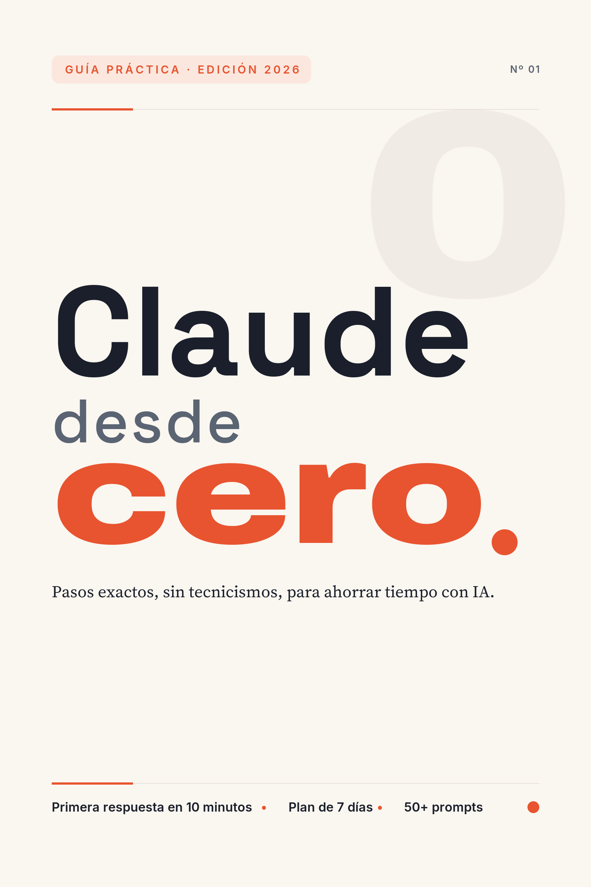

Aviso importante: Producto educativo independiente. No está afiliado, patrocinado ni aprobado por Anthropic. Claude es una marca de su respectivo titular.
Este ebook es una guía práctica para aprender a usar Claude desde cero. Claude es un asistente de inteligencia artificial. La inteligencia artificial (o “IA”) es un programa de computadora que puede entender lo que escribes y responderte, casi como una conversación con una persona.
Aquí no vas a encontrar teoría complicada. Vas a encontrar pasos exactos. Cada capítulo te dice dónde hacer clic, qué escribir y qué vas a ver en pantalla. La meta es una sola: que ahorres tiempo en tus tareas de todos los días usando IA, sin necesidad de saber nada técnico.
Este ebook es para ti si:
No necesitas experiencia previa. Solo necesitas un teléfono o una computadora, conexión a internet y ganas de practicar.
Al terminar este ebook sabrás:
Seamos honestos desde el principio:
Cada capítulo de aprendizaje (del 1 al 12) sigue la misma estructura. Así siempre sabes qué esperar:
Los capítulos finales (13 a 18) son de consulta: conservan secciones como “Ahora tú”, “El error típico”, “Si te atoras”, “En una frase” y “Siguiente paso”, pero su cuerpo tiene formato propio (lista de errores, biblioteca de prompts, plan por días, cierre, glosario y bibliografía).
Un consejo: no leas este ebook como una novela. Léelo con Claude abierto en tu teléfono o computadora. Lee un paso, hazlo, y sigue con el siguiente. Practicar es lo que hace la diferencia.
Cada módulo está pensado para tomarte entre 20 y 40 minutos, incluyendo los ejercicios. Puedes hacer un capítulo al día, o dos por semana. Tú marcas el ritmo. Es mejor avanzar poco y practicar, que leerlo todo de corrido sin tocar la computadora.
Ruta rápida (si tienes prisa): lee los capítulos 2, 4, 5 y 14. Con esos cuatro ya puedes crear tu cuenta, escribir buenas peticiones y aplicar Claude a una tarea real. Después regresa por el resto cuando tengas tiempo.
Ruta completa (recomendada): lee los capítulos en orden, del 1 al final. Cada capítulo se apoya en el anterior. Esta ruta es la mejor si nunca has usado IA, porque no da nada por sentado.
Vas a ver notas como esta a lo largo del libro: [VERIFICAR: dato que puede cambiar]. Significa que ese dato (un precio, una función, un nombre de botón) puede haber cambiado desde que se escribió este ebook. Cuando la veas, revisa la información en el sitio oficial antes de tomar una decisión.
También conocerás personajes como Marcela, dueña de la “Papelería El Faro”. Son personas y negocios inventados para los ejemplos. Cualquier parecido con la realidad es coincidencia.
Listo. Respira. Esto es más fácil de lo que crees. Nos vemos en el capítulo 1.
Entender qué es Claude, qué puede hacer por ti y en qué se equivoca. Al final podrás explicárselo a alguien más con tus propias palabras.
Claude es un asistente de inteligencia artificial. La inteligencia artificial (o “IA”) es un programa de computadora entrenado para entender texto y responder con texto. Tú le escribes algo, como si le mandaras un mensaje a una persona, y Claude te contesta.
¿Quién está detrás? Una empresa llamada Anthropic. Es una compañía de Estados Unidos que se dedica a crear IA y a investigar cómo hacerla más segura y confiable. Anthropic crea a Claude, lo mantiene y lo actualiza.
Ahora, una aclaración que confunde a mucha gente: la palabra “Claude” se usa para tres cosas distintas. Vamos con una analogía cotidiana.
Piensa en el agua purificada:
En resumen: mismo cerebro, distintas puertas de entrada. Tú usarás la puerta fácil, la aplicación.
Este capítulo es de comprensión, no de clics. El ejercicio es ordenar las ideas. Toma papel y pluma, o abre las notas de tu teléfono.
Sabes que lo hiciste bien si… puedes leer tus cuatro notas en voz alta y suenan lógicas, sin huecos.
Si no aparece, entonces… si alguna idea no te queda clara, vuelve a leer “La idea en simple” despacio. No sigas al capítulo 2 con dudas; este es el cimiento.
Con la aplicación, Claude puede ayudarte a:
Un ejemplo. Marcela tiene la Papelería El Faro. Antes tardaba una hora redactando el aviso de temporada escolar. Ahora le escribe a Claude: “Redacta un aviso amable para mis clientes: habrá descuentos en útiles del 1 al 15 de agosto”. Claude le da un borrador en segundos. Marcela lo revisa, cambia dos frases, y listo.
Fíjate en el detalle: Marcela revisa el texto. Eso nos lleva a la parte más importante del capítulo.
Claude tiene límites. Conocerlos te protege:
Regla de oro: si la información es importante, verifícala antes de usarla. ¿Un dato para un trámite? Confírmalo en la fuente oficial. ¿Una cifra para tu negocio? Búscala en un sitio confiable. ¿Un consejo de salud? Pregunta a tu médico.
Piensa en Claude como en un ayudante muy rápido y muy leído, pero que a veces se confunde con total seguridad. Un buen jefe revisa el trabajo de su ayudante. Tú eres el jefe.
Ejercicio guiado. Explícale a un familiar o amigo, en un minuto, qué es Claude. Usa la analogía del agua para la diferencia entre modelo, aplicación y API. Si la otra persona lo entiende, tú lo entendiste.
Ejercicio independiente. Escribe una lista con dos columnas. Columna 1: “Le confiaría a Claude…” (por ejemplo, un borrador de correo). Columna 2: “Siempre verificaría…” (por ejemplo, fechas, precios, requisitos de trámites). Mínimo tres puntos por columna.
Creer que todo lo que dice la IA es cierto porque “lo dijo la computadora”. Las alucinaciones existen. El texto puede sonar perfecto y aún así tener un dato falso. Confía en Claude para el borrador; confía en ti para la verificación.
Claude es un asistente de IA creado por Anthropic que te ayuda a escribir, resumir y analizar, siempre y cuando tú verifiques lo importante.
Ya sabes qué es Claude. En el capítulo 2 vas a crear tu cuenta, paso a paso y con seguridad. Ten a la mano tu correo electrónico.
Crear tu cuenta en claude.ai, entrar sin problemas y dejar lista la configuración básica. Al terminar tendrás Claude funcionando y sabrás cuidar tu cuenta.
Para usar Claude necesitas una cuenta. Una cuenta es tu “llave personal”: le dice al servicio quién eres y guarda tus conversaciones. Crearla es gratis y toma unos minutos. Se hace en el sitio claude.ai, desde el navegador. El navegador es el programa con el que entras a páginas de internet (por ejemplo Chrome, Safari o Edge; su ícono suele ser un círculo de colores o una brújula).
Nada más. No necesitas tarjeta de crédito para la cuenta gratuita. [VERIFICAR: requisitos de registro vigentes, incluida la verificación por teléfono si se solicita]
Sabes que lo hiciste bien si… ves una pantalla con un saludo y una caja de texto que invita a escribir tu primer mensaje.
Si no aparece, entonces… revisa la carpeta de “correo no deseado” o “spam” por si el código llegó ahí; espera dos minutos y pide reenviar el código; o cierra el navegador y repite desde el paso 1.
“Iniciar sesión” significa entrar a tu cuenta ya creada.
Sabes que lo hiciste bien si… aparecen tus chats anteriores o el saludo con tu nombre.
Si no aparece, entonces… probablemente elegiste otra opción de entrada. Vuelve e intenta con la otra (si te registraste con Google, entra con Google).
Sabes que lo hiciste bien si… encontraste el menú de configuración y revisaste la sección de privacidad, aunque no hayas cambiado nada.
Si no aparece, entonces… las opciones cambian de lugar con las actualizaciones. Busca palabras como “Configuración”, “Ajustes”, “Settings” o “Privacidad” en los menús de las esquinas.
Claude tiene un plan gratuito (Free, que significa “gratis”) y planes de pago. En general funciona así:
¿Cuál te conviene? Empieza con el gratuito. Úsalo unas dos semanas. Si los límites te frenan seguido, considera pagar. Las cifras y nombres exactos cambian: [VERIFICAR: planes y precios vigentes en claude.com/pricing].
A veces este ebook menciona un botón o función que tú no ves. Tranquilidad: la disponibilidad depende de tu cuenta, plan y país, y las pantallas cambian con las actualizaciones. Qué hacer: primero, busca la función con otro nombre parecido en los menús. Segundo, cierra sesión y vuelve a entrar. Tercero, revisa si es exclusiva de un plan de pago [VERIFICAR: funciones por plan]. Si no está, sigue adelante: casi todo el ebook funciona con el plan gratuito.
Ejercicio guiado. Cierra sesión y vuelve a iniciarla tú solo, sin ver los pasos. Hazlo hoy mismo, mientras lo tienes fresco. Cierra sesión desde el menú de tu inicial o foto, busca la opción de salir, y luego entra de nuevo.
Ejercicio independiente. Escribe tu primer mensaje a Claude. Algo sencillo: “Hola, soy nuevo aquí. Preséntate y dime tres cosas en las que puedes ayudarme”. Lee la respuesta completa. Ya estás conversando con una IA.
Registrarse con una opción (por ejemplo, correo) y luego intentar entrar con otra (por ejemplo, Google). Eso puede crear confusión o hasta cuentas duplicadas. Anota en un lugar seguro con qué opción y con qué correo te registraste.
Tu cuenta es tu llave: créala con un correo que controles, cuídala como cuidas tu tarjeta del banco y empieza con el plan gratuito.
Ya estás dentro. En el capítulo 3 daremos un paseo por la pantalla de Claude para que reconozcas cada botón y pierdas el miedo a explorar.
Reconocer cada parte de la pantalla de Claude: dónde escribes, dónde quedan tus chats y qué hace cada botón. Al terminar podrás moverte con confianza y sin miedo a “descomponer” algo.
La pantalla de Claude es como el mostrador de una tienda sencilla. Tiene tres zonas principales:
Antes de empezar, memoriza esta frase, porque aplica a todo el capítulo: la disponibilidad depende de tu cuenta, plan y país. Puede que veas botones que aquí no mencionamos, o que no encuentres alguno que sí mencionamos. Es normal. Nada de lo que toques va a romper tu cuenta.
Un término nuevo: “prompt”. Un prompt es simplemente el mensaje o instrucción que le escribes a la IA. “Redacta una invitación de cumpleaños” es un prompt. Lo usaremos mucho a partir del capítulo 4.
Haremos el recorrido tocando cada zona. Ten Claude abierto.
Sabes que lo hiciste bien si… tienes al menos dos conversaciones en tu lista, entraste y saliste de ambas, y encontraste el botón de adjuntar.
Si no aparece, entonces… los botones cambian de lugar según el dispositivo y las actualizaciones. Busca por función, no por posición exacta: un clip o un más para adjuntar, tres rayitas para el menú, una flecha para enviar. Si un botón no existe en tu pantalla, continúa con el paso siguiente.
Recuerda: la disponibilidad depende de tu cuenta, plan y país. [VERIFICAR: disponibilidad de cada función al momento de leer]
Además de la página web, existen aplicaciones:
Con una misma cuenta, tus conversaciones se sincronizan: lo que empiezas en el teléfono lo puedes continuar en la computadora.
Ejercicio guiado. Crea una conversación nueva y escribe este prompt: “Dame tres ideas para organizar mejor mi semana”. Cuando responda, renombra ese chat como “Pruebas” desde el menú de opciones de la conversación. Así practicas crear, conversar y renombrar en una sola ronda.
Ejercicio independiente. Haz tu propio mapa de la pantalla. En papel, dibuja un rectángulo y marca dónde está: la caja de mensaje, el botón de enviar, la lista de chats, el botón de nuevo chat y el botón de adjuntar. Después, anota qué funciones de la lista anterior (Proyectos, búsqueda web, estilos, memoria) sí aparecen en tu cuenta y cuáles no. Ese inventario te servirá en los siguientes capítulos.
Escribir todos los temas en una sola conversación eterna. Mezclar la lista del súper con el correo de trabajo y las dudas de un trámite hace que las respuestas pierdan calidad y que luego no encuentres nada. Regla simple: tema nuevo, chat nuevo. Para eso existe el botón de nueva conversación.
La pantalla de Claude se recorre en un paseo: caja para escribir, lista para tus chats, un clip para adjuntar, y la regla de “tema nuevo, chat nuevo”.
Ya conoces el terreno. En el capítulo 4 aprenderás a escribir buenos prompts: la habilidad que convierte a Claude en un verdadero ahorrador de tiempo.
Al terminar este capítulo vas a saber escribir instrucciones que Claude entienda a la primera. Vas a conocer el método C.L.A.R.O., una fórmula de cinco pasos para pedir lo que necesitas. Y vas a practicar con dos ejemplos completos: un correo y un plan de estudio.
Hablar con Claude es como pedir un platillo en un restaurante.
Si dices “tráigame comida”, el mesero te traerá cualquier cosa. Tal vez te guste. Tal vez no.
Si dices “quiero una sopa de verduras, sin cebolla, en plato hondo, para llevar”, recibirás justo lo que querías.
Con Claude pasa igual. La instrucción que le escribes se llama prompt (se pronuncia “prompt” y significa “petición” o “instrucción”). Un prompt vago produce respuestas vagas. Un prompt claro produce respuestas útiles.
Para no olvidar nada, usa la palabra C.L.A.R.O. Cada letra es un ingrediente:
No necesitas usar las cinco letras siempre. Para una pregunta rápida, con una frase basta. Pero cuando el resultado importa (un correo delicado, un plan, un documento), cada letra que agregues mejora la respuesta.
Tampoco necesitas escribir las palabras “Contexto” o “Logro” en tu mensaje. Puedes redactarlo de corrido, como un párrafo normal. Las letras son una lista mental para no olvidar ingredientes, no un formato obligatorio. En este libro las escribimos por separado para que veas cada pieza con claridad.
Una cosa más antes de empezar: no le tengas miedo a “escribir mal” un prompt. No hay respuestas castigadas ni maneras incorrectas de preguntar. Lo peor que puede pasar es que la respuesta no te sirva… y eso se arregla con la letra O.
Vas a ver dos ejemplos completos. En cada uno verás el prompt deficiente, el prompt mejorado con C.L.A.R.O., y cómo iterar. Iterar significa mejorar algo por rondas: pides, revisas, corriges, y repites hasta quedar conforme.
Paso 1. Mira primero el prompt deficiente.
Escríbeme un correo para cambiar una cita.
Verás que Claude responde algo genérico. No sabe con quién es la cita, ni por qué la cambias, ni qué tono usar. Va a inventar los detalles.
Paso 2. Ahora escribe el prompt con C.L.A.R.O.
Copia este ejemplo en Claude y envíalo:
Contexto: Soy paciente del consultorio dental de la doctora Rivas.
Tengo cita el jueves a las 10 de la mañana, pero me salió un
compromiso de trabajo que no puedo mover.
Logro: Quiero un correo para pedir que me cambien la cita a la
semana siguiente, de preferencia por la tarde.
Ajustes: Tono amable y breve. Quiero disculparme por el cambio,
pero sin exagerar. Máximo 100 palabras. No inventes datos que
no te di.
Resultado esperado: El correo listo para copiar, con asunto
incluido.
Sabes que lo hiciste bien si la respuesta menciona a la doctora Rivas, el jueves a las 10, y propone la semana siguiente por la tarde. Si no aparece alguno de esos datos, entonces respóndele: “Te faltó mencionar [el dato]. Agrégalo, por favor.”
Paso 3. Entiende la diferencia.
El primer prompt obligaba a Claude a adivinar. El segundo le dio la situación (Contexto), el objetivo (Logro), las reglas del juego (Ajustes) y el formato (Resultado). Por eso el segundo correo sale casi listo para enviar.
Paso 4. Qué esperar como respuesta.
Un correo corto, con asunto, saludo, la petición del cambio, la propuesta de nueva fecha y una despedida cordial. Nada más.
Paso 5. Observa y corrige (la letra O).
Lee el correo. ¿Suena como tú? Si no, pide ajustes concretos. Por ejemplo:
Está bien, pero hazlo un poco más cálido y cambia
"Estimada doctora" por "Hola, doctora Rivas".
Verás que Claude entrega una nueva versión con solo esos cambios. No necesitas repetir todo el prompt.
Paso 1. Mira el prompt deficiente.
Hazme un plan para aprender inglés.
Verás un plan genérico, quizá muy largo, pensado para una persona que no eres tú.
Paso 2. Escribe el prompt con C.L.A.R.O.
Contexto: Tengo 52 años y trabajo de tiempo completo. Sé un
poco de inglés: entiendo palabras sueltas, pero no puedo tener
una conversación. Dispongo de 30 minutos al día, de lunes a
viernes, y estudio sola en casa con mi celular.
Logro: Quiero un plan de 4 semanas para poder presentarme,
pedir comida y preguntar direcciones en inglés.
Ajustes: Actúa como un maestro paciente. Usa actividades
gratuitas o que solo necesiten el celular. Evita gramática
avanzada. Lenguaje sencillo, sin términos de enseñanza que
no expliques.
Resultado esperado: Una tabla con 4 filas (una por semana) y
3 columnas: qué practicar, cómo practicarlo y cómo saber que
avancé.
Sabes que lo hiciste bien si recibes una tabla de cuatro semanas ajustada a 30 minutos diarios. Si no aparece en tabla, entonces escribe: “Preséntalo en tabla, como te pedí.”
Paso 3. Entiende la diferencia.
El contexto (edad, tiempo, nivel) hace que el plan sea realista. El logro concreto (“presentarme, pedir comida, preguntar direcciones”) evita un plan infinito. Los ajustes (“maestro paciente”, “sin gramática avanzada”) definen el estilo. Y el resultado en tabla lo hace fácil de seguir.
Paso 4. Qué esperar como respuesta.
Una tabla clara, con actividades pequeñas y una forma de medir tu avance cada semana.
Paso 5. Itera.
Prueba el plan unos días. Luego regresa y dile la verdad:
La semana 1 me quedó fácil, pero la semana 2 me costó mucho.
Hazla más suave y reparte lo difícil en las semanas 3 y 4.
Claude ajustará el plan. Esa conversación de ida y vuelta es la parte más valiosa del método. Un plan corregido con tu experiencia real vale diez veces más que el plan perfecto de la primera respuesta.
Si eres estudiante: los dos ejemplos funcionan igual para ti. Cambia la cita con la dentista por un correo a un profesor para reponer una entrega, y el plan de inglés por el plan de estudio de tu materia más difícil. El método no cambia; solo cambian tus datos.
Ejercicio guiado. Toma esta petición vaga: “Ayúdame con el regalo de mi mamá”. Mejórala con C.L.A.R.O.:
Sabes que lo hiciste bien si las 5 ideas respetan tu presupuesto y los gustos que diste.
Ejercicio independiente. Piensa en algo real que necesites esta semana (un mensaje, una decisión, un plan). Escríbelo primero de forma vaga. Luego reescríbelo con las cinco letras. Envía las dos versiones a Claude, una tras otra, y compara las respuestas. La diferencia te va a convencer más que este capítulo.
Escribir el prompt perfecto a la primera… o rendirse si no sale. Muchas personas creen que si la primera respuesta no fue buena, “Claude no sirve” o “yo no sé usarlo”. Falso. La letra O existe porque casi nadie recibe la respuesta ideal al primer intento. Los usuarios expertos no escriben prompts perfectos: corrigen rápido y sin pena. Pedir cambios no es fracasar; es la forma normal de trabajar.
Dile a Claude quién eres, qué quieres, con qué condiciones y en qué formato, y luego corrige la respuesta hasta que sea tuya.
Ya tienes el método. En el capítulo 5 lo vas a usar de principio a fin con una tarea real: escribir un correo difícil, revisarlo, corregirlo y guardarlo como plantilla para siempre.
En este capítulo vas a completar una tarea real con Claude, sin saltarte ningún paso: desde definir qué necesitas hasta guardar tu prompt como plantilla para volver a usarlo. Al final tendrás un correo terminado y un método que sirve para cualquier correo incómodo.
Vamos a acompañar a un personaje que ya conoces: Marcela, la dueña de la Papelería El Faro. Además del mostrador, Marcela surte pedidos especiales por encargo. Su imprenta se atrasó, y ahora el pedido de agendas personalizadas que le encargó su cliente don Arturo llegará dos semanas tarde.
Marcela lleva media hora frente a la pantalla sin saber cómo empezar. Le da pena. Teme que el cliente se enoje.
Este es el tipo de tarea donde Claude brilla: no decide por ti, pero te ayuda a decir lo difícil con claridad y respeto. Tú pones la verdad y el criterio; Claude pone el borrador. Sigue los pasos con Marcela y luego repítelos con un correo tuyo.
Paso 1. Define la necesidad en una frase.
Antes de abrir Claude, Marcela escribe en papel qué necesita: “Avisar a don Arturo que sus agendas personalizadas se entregarán dos semanas tarde, sin perder su confianza.”
Sabes que lo hiciste bien si tu frase cabe en un renglón y dice qué quieres lograr, no solo qué pasó. Si no te sale, entonces pregúntate: “¿Qué quiero que sienta o haga la otra persona al leer mi correo?”
Paso 2. Reúne la información.
Marcela anota los datos reales: la fecha prometida (10 de agosto), la nueva fecha (24 de agosto), la causa (retraso de la imprenta) y qué puede ofrecer (envío sin costo como disculpa).
Sabes que lo hiciste bien si tienes fechas, causa y una posible compensación anotadas. Si te falta un dato, entonces consíguelo antes de continuar: Claude no lo conoce y no debe inventarlo.
Paso 3. Redacta el prompt con C.L.A.R.O.
Marcela abre Claude y escribe:
Contexto: Tengo una papelería y surto pedidos especiales por
encargo. Mi cliente, don Arturo, encargó agendas personalizadas
con entrega prometida el 10 de agosto. Mi imprenta se atrasó y
la nueva fecha de entrega es el 24 de agosto. Es un buen
cliente y quiero cuidar la relación.
Logro: Un correo para avisarle del retraso, disculparme y
conservar su confianza.
Ajustes: Tono honesto, cálido y profesional. Sin excusas
largas: una explicación breve basta. Ofrezco el envío sin
costo como disculpa. Máximo 150 palabras. No inventes datos.
Resultado esperado: El correo completo, con asunto, listo
para copiar.
Verás que Claude entrega un correo con asunto, disculpa, nueva fecha y el ofrecimiento. Sabes que lo hiciste bien si el correo usa las fechas correctas y suena respetuoso. Si Claude agregó algo que no es cierto (por ejemplo, un descuento que no ofreciste), entonces dile: “Quita eso; yo no lo ofrecí.”
Paso 4. Revisa la respuesta con ojos de dueña.
Marcela lee el borrador despacio y se pregunta tres cosas: ¿es verdad todo?, ¿suena como yo?, ¿falta algo importante?
Ella nota dos detalles: el correo empieza muy frío (“Estimado cliente”) y no menciona que el resto del pedido va a tiempo.
Sabes que lo hiciste bien si encontraste al menos una cosa que cambiar. Casi siempre la hay. Si no encuentras nada, entonces léelo en voz alta: los tropiezos se oyen mejor de lo que se ven.
Paso 5. Pide la primera corrección.
Marcela escribe:
Cambia el saludo por "Estimado don Arturo" y hazlo un poco
más cercano, como le hablaría a un cliente de años.
Verás que Claude reescribe solo eso, sin descomponer lo demás.
Paso 6. Pide la segunda corrección.
Agrega una línea que aclare que las plumas grabadas sí se
entregarán en la fecha original, el 10 de agosto. Solo se
atrasan las agendas.
Sabes que lo hiciste bien si la nueva versión incluye ambos cambios y sigue bajo las 150 palabras. Si se alargó demasiado, entonces pide: “Mantenlo en 150 palabras como máximo.”
Paso 7. Verifica los datos tú mismo.
Antes de enviar, Marcela revisa con sus propios ojos: nombre del cliente, las dos fechas, y que el ofrecimiento del envío gratis sea algo que de verdad puede cumplir. Este paso no se delega. Claude redacta bien, pero la responsabilidad de los datos es tuya.
Sabes que lo hiciste bien si comparaste cada dato del correo contra tus notas del paso 2. Si un dato no coincide, entonces corrígelo tú directamente o pídele a Claude el cambio exacto.
Paso 8. Copia y envía el resultado.
Marcela selecciona el texto del correo y lo copia. En muchas aplicaciones de Claude hay un botón de copiar junto a la respuesta; si no lo ves, entonces selecciona el texto con el mouse o el dedo y usa copiar y pegar de siempre. Lo pega en su programa de correo, pone la dirección de don Arturo y envía.
Verás que todo el proceso, desde el paso 1, tomó unos 10 minutos. Sin Claude, Marcela llevaba 30 minutos solo mirando la pantalla.
Paso 9. Guarda el prompt como plantilla reutilizable.
Aquí está el truco que ahorra tiempo para siempre. Una plantilla es un texto guardado con espacios en blanco para rellenar. Marcela copia su prompt del paso 3 y lo guarda en sus notas, pero cambia los datos por corchetes:
Contexto: Vendo [producto]. Mi cliente [nombre] encargó
[pedido] con entrega el [fecha original]. Por [causa], la
nueva fecha es [fecha nueva]. Quiero cuidar la relación.
Logro: Un correo para avisar del retraso, disculparme y
conservar su confianza.
Ajustes: Tono honesto, cálido y profesional. Explicación
breve. Ofrezco [compensación]. Máximo 150 palabras. No
inventes datos.
Resultado esperado: Correo completo con asunto, listo
para copiar.
Sabes que lo hiciste bien si tu plantilla ya no tiene datos de don Arturo, solo corchetes. Si no sabes dónde guardarla, entonces usa la aplicación de notas de tu teléfono con el título “Plantilla: correo de retraso”.
La próxima vez que algo se atrase, Marcela rellenará los corchetes y tendrá su correo en dos minutos.
Ejercicio guiado. Repite los 9 pasos con este caso: tu personaje presta un libro que ya necesita de vuelta, y le da pena pedirlo. Define la necesidad, junta los datos (qué libro, cuándo lo prestó), escribe el prompt con C.L.A.R.O., pide dos correcciones, verifica y guarda la plantilla.
Ejercicio independiente. Elige un correo o mensaje difícil real que hayas pospuesto: una disculpa, un recordatorio de pago, un “no” amable. Hazlo completo con los 9 pasos. No lo envíes si no estás conforme; el ejercicio vale aunque quede en borrador.
Enviar el primer borrador sin revisarlo. El texto de Claude sale tan bien presentado que da la impresión de estar terminado. Pero un correo difícil lleva tu nombre y tu relación con la otra persona. Los pasos 4 a 7 (revisar, corregir dos veces y verificar datos) son los que convierten un buen borrador en tu correo. Nunca los saltes en mensajes delicados.
Un correo difícil deja de serlo cuando tú pones la verdad y el criterio, Claude pone el borrador, y tu plantilla guarda el camino para la próxima vez.
Ya completaste una tarea real completa. En el capítulo 6 vas a descubrir 10 formas de usar Claude en tu vida diaria: desde organizar tu semana hasta planear un viaje, cada una con su prompt listo para copiar.
Vas a conocer 10 formas de usar Claude en tu vida personal, cada una con un prompt listo para copiar. Al terminar, habrás probado al menos dos y sabrás adaptar cualquiera a tu situación.
Claude no es solo para trabajar. Es como tener a la mano una persona paciente que te ayuda a pensar, organizar y decidir en lo cotidiano: la despensa, el viaje, la conversación pendiente con tu hijo.
La receta es la misma del capítulo 4: contexto, logro, ajustes, formato, y corregir. Los prompts de este capítulo ya traen esa estructura. Tú solo cambia los datos entre corchetes [así] por los tuyos.
⚠️ Advertencia importante: Claude puede darte información general sobre salud, dinero o temas legales, pero no sustituye a un médico, un asesor financiero ni un abogado. Úsalo para entender mejor y preparar preguntas, no para tomar decisiones delicadas por su cuenta. Ante una decisión médica, financiera o legal importante, consulta siempre a un profesional.
Cuando tienes muchos pendientes sueltos, Claude los convierte en un plan realista. Dale tu lista tal como está, aunque sea un desorden.
Tengo estos pendientes esta semana: [escribe tu lista, sin
ordenar]. Trabajo de [hora] a [hora] y mis tardes libres son
[días]. Organízalos por día en una tabla, poniendo primero
lo urgente. Máximo 3 pendientes por día para que sea
realista. Si algo no cabe, dime qué dejarías para la
próxima semana y por qué.
Qué esperar: una tabla por día, con lo urgente al inicio y sugerencias honestas de qué posponer. Si tu semana cambia, dile qué pasó y pide el reajuste.
Claude arma itinerarios a tu medida: presupuesto, ritmo y gustos. Recuerda verificar precios y horarios reales antes de pagar nada, porque cambian con frecuencia.
Voy a viajar a [ciudad] del [fecha] al [fecha] con [quiénes].
Presupuesto aproximado: [cantidad] sin contar hospedaje.
Nos gusta [gustos: comida local, museos, naturaleza...] y
preferimos un ritmo tranquilo. Arma un itinerario por día,
con mañana, tarde y noche, e incluye una opción bajo techo
por si llueve. Marca qué actividades suelen ser gratuitas.
Qué esperar: un plan día por día, con alternativas. Los precios y horarios que mencione son aproximados: confírmalos en las páginas oficiales.
Claude explica cualquier tema al nivel que tú pidas, y puedes preguntar sin pena las veces que sea.
Explícame [tema] como si yo tuviera conocimientos de
primaria. Usa comparaciones con la vida diaria. Divide la
explicación en 5 ideas, de la más básica a la más avanzada.
Al final hazme 3 preguntas para comprobar si entendí.
Qué esperar: una explicación por capas y un mini examen amable. Si una idea no queda clara, di: “La idea 3 no la entendí; explícala con otro ejemplo.”
¿Una carta del banco, un reglamento, un contrato de renta que no entiendes? Pégalo y pide un resumen. Ojo: si el documento tiene datos muy personales, quita antes números de cuenta o datos que no quieras compartir.
Te voy a pegar un documento. Resúmelo en 5 puntos con
lenguaje sencillo. Después dime: 1) qué me están pidiendo
o informando, 2) si hay fechas límite, 3) qué preguntas
debería hacer antes de firmar o responder.
[pega aquí el texto]
Qué esperar: un resumen claro con fechas y focos rojos. Para documentos legales importantes, úsalo para entender, y confirma con un profesional.
Cuando dudas entre dos productos, Claude ordena la comparación. Tú aportas los datos de cada opción (de las páginas de las tiendas) y él los acomoda.
Estoy decidiendo entre dos [producto]. Opción A: [modelo,
precio y características]. Opción B: [modelo, precio y
características]. Lo usaré principalmente para [uso] y mi
prioridad es [durabilidad / precio / facilidad de uso].
Compáralas en una tabla y dime cuál conviene para mi caso
y por qué, en 3 líneas.
Qué esperar: una tabla comparativa y una recomendación razonada. La decisión final es tuya; Claude solo ordena el panorama.
Claude te ayuda a ver a dónde se va el dinero y a armar un plan sencillo. Recuerda: es orientación general, no asesoría financiera.
Mis ingresos mensuales son aproximadamente [cantidad].
Mis gastos fijos: [renta, luz, agua, comida, transporte,
etc. con cantidades aproximadas]. Quiero ahorrar para
[meta] en [tiempo]. Arma una tabla de presupuesto mensual
por categorías, señala en qué categoría suele haber fugas
y proponme un monto de ahorro realista, no ideal.
Qué esperar: una tabla de categorías con montos y consejos concretos. Ajusta las cifras reales tú mismo cada mes.
Antes de una plática delicada (con tu pareja, un vecino, un familiar), ensayar con Claude baja los nervios y ordena las ideas.
Necesito hablar con [persona] sobre [tema delicado]. Me
preocupa que [temor]. Quiero lograr [objetivo] sin dañar
la relación. Ayúdame con: 1) tres formas de empezar la
conversación, 2) cómo decir lo central en una frase clara
y respetuosa, 3) qué responder si reacciona mal. Después,
si te digo "ensayemos", tú harás el papel de la otra
persona para que yo practique.
Qué esperar: frases concretas y la opción de ensayar como en un juego de roles. Practica en voz alta: funciona mejor de lo que suena.
Adiós al “¿y hoy qué hacemos de comer?”. Claude planea con lo que tienes y lo que te gusta.
Somos [número] personas en casa. Nos gusta [tipos de
comida] y evitamos [alergias o ingredientes no deseados].
Presupuesto ajustado y máximo 40 minutos de cocina entre
semana. Arma un menú de lunes a domingo (comida y cena)
en una tabla, y al final dame la lista del súper agrupada
por secciones: frutas y verduras, abarrotes, carnes,
lácteos.
Qué esperar: menú semanal más lista de compras lista para el mercado. Pide cambios directos: “Cambia el pescado del jueves por algo con pollo.”
Claude arma planes graduales para empezar pequeño y no abandonar a la semana dos.
Quiero construir el hábito de [hábito] pero lo he
intentado y lo abandono. Mi rutina actual es [descríbela
breve]. Diseña un plan de 30 días que empiece ridículamente
fácil y suba poco a poco. Formato: semana por semana, con
la acción diaria, cuándo hacerla dentro de mi rutina y un
plan B para los días malos.
Qué esperar: un plan progresivo y realista. A la semana, cuéntale cómo te fue y pide ajustes: la constancia se construye iterando.
Discursos de cumpleaños, felicitaciones, un mensaje de pésame, unas palabras para un aniversario. Claude te ayuda a encontrar las palabras sin perder tu voz.
Necesito escribir [tipo de texto: brindis, felicitación,
dedicatoria] para [persona y ocasión]. Nuestra relación:
[breve descripción]. Quiero mencionar [recuerdo o detalle
personal]. Tono [emotivo / alegre / sobrio], extensión de
[tiempo o líneas]. Dame 2 versiones distintas para elegir.
Qué esperar: dos borradores con tu anécdota integrada. Elige uno, pide ajustes y dilo en voz alta antes de la ocasión.
Ejercicio guiado. Elige el caso 1 (organizar tu semana). Copia el prompt, rellena los corchetes con tu semana real y envíalo. Pide al menos un ajuste (“mueve tal cosa al viernes”). Sabes que lo hiciste bien si terminas con una tabla que de verdad piensas seguir.
Ejercicio independiente. Escoge otros dos casos que te llamen la atención. Adáptalos y úsalos con situaciones reales tuyas. Guarda en tus notas los prompts que te funcionaron, con corchetes, como aprendiste en el capítulo 5.
Copiar el prompt sin cambiar los corchetes. Los corchetes [así] son espacios para TUS datos. Si los dejas vacíos o genéricos, la respuesta será genérica. Treinta segundos rellenándolos bien valen más que diez correcciones después.
Claude es un asistente paciente para lo cotidiano: tú pones tus datos y tu criterio, él pone el orden y el borrador.
Ya usas Claude con soltura en tu vida personal. En el capítulo 7 damos el salto al trabajo: 15 usos profesionales, desde correos y minutas hasta ventas y capacitación, con una regla de oro sobre la información confidencial.
Vas a conocer 15 formas de usar Claude en el trabajo, con un prompt breve por cada una. También vas a aprender la regla más importante del uso profesional: cómo proteger la información confidencial de tu empresa y tus clientes.
Si aún no trabajas: piensa en la escuela como tu trabajo. Tus “clientes” son tus maestros y compañeros, tus “reportes” son tareas y exposiciones, y tus “juntas” son los trabajos en equipo. Casi todos estos casos se traducen directo.
En el trabajo, Claude es como un asistente que redacta rápido, ordena ideas y prepara borradores. Tú sigues siendo quien decide, revisa y firma.
Pero antes de cualquier prompt laboral, grábate esta regla:
⚠️ Regla de oro de la confidencialidad: Nunca pegues en Claude información confidencial de tu empresa o de tus clientes sin autorización. Esto incluye datos personales de clientes, cifras financieras internas, contratos, contraseñas y cualquier cosa que tu empresa considere reservada. Si tu empresa tiene políticas sobre herramientas de inteligencia artificial, conócelas y respétalas. Ante la duda, pregunta a tu jefe o al área responsable.
Cómo anonimizar (quitar los datos que identifican): - Cambia nombres reales por genéricos: “Cliente A”, “Empresa X”, “mi compañero”. - Quita o redondea cifras identificables: en lugar de “$1,847,392”, escribe “alrededor de 1.8 millones” o “una cantidad X”. - Elimina correos, teléfonos, direcciones y números de contrato. - Describe la situación sin detalles únicos que delaten de quién se trata.
La buena noticia: un texto anonimizado funciona igual de bien. Claude no necesita saber el nombre real del cliente para ayudarte a escribirle.
En los 15 casos que siguen, los prompts ya vienen anonimizados. Mantén esa costumbre.
El uso más frecuente. Sirve para responder, pedir, recordar o dar malas noticias con tacto.
Redacta un correo para [situación: pedir una prórroga /
responder una queja / dar seguimiento]. Destinatario: [rol,
sin nombre real, ej. "un cliente frecuente"]. Datos clave:
[hechos]. Tono profesional y cordial, máximo 120 palabras,
con asunto incluido.
Qué esperar: un correo listo para personalizar con el nombre real ya fuera de Claude.
Una minuta es el resumen escrito de lo que se habló y acordó en una junta. Pega tus notas sueltas (anonimizadas) y pide orden.
Convierte estas notas de reunión en una minuta formal con:
asistentes (por rol), temas tratados, acuerdos, responsables
y fechas compromiso. Notas: [pega tus apuntes sin nombres
reales, usa iniciales o roles].
Qué esperar: una minuta estructurada. Revisa que los acuerdos y fechas coincidan con lo que realmente se dijo.
Para el informe semanal o mensual que siempre cuesta empezar.
Ayúdame a redactar un reporte [semanal/mensual] de mi área.
Logros: [lista]. Pendientes: [lista]. Problemas: [lista].
Formato: título, resumen de 3 líneas y secciones con
viñetas. Tono directo, sin adornos.
Qué esperar: un reporte limpio que solo necesita tus cifras verificadas.
Claude no diseña las láminas, pero arma la estructura y los textos de cada una.
Voy a presentar [tema] a [audiencia] en [minutos]. Objetivo:
[qué quiero lograr]. Proponme la estructura lámina por
lámina: título de cada una, 3 viñetas de contenido y una
idea para el cierre.
Qué esperar: el esqueleto completo de tu presentación, listo para pasar a tu programa de láminas.
Para entender rápido un tema nuevo de tu industria antes de una junta.
Explícame [tema de mi industria] en lenguaje claro: qué es,
por qué importa, quiénes son los actores principales y qué
preguntas inteligentes puedo hacer en una reunión sobre
esto. Al final dime qué información debería verificar en
fuentes actuales.
Qué esperar: un panorama inicial sólido. Complementa con fuentes recientes: los datos de Claude pueden no estar al día.
Para convertir una encomienda vaga en un plan con pasos.
Me encargaron [proyecto]. Fecha límite: [fecha]. Equipo:
[número de personas y roles]. Divide el proyecto en etapas
con: tareas, responsable sugerido por rol, duración estimada
y riesgos principales. Formato: tabla.
Qué esperar: un plan borrador para ajustar con tu equipo. Las duraciones son estimaciones: valídalas.
Puedes pegar una tabla pequeña (anonimizada) y pedir lecturas.
Te pego una tabla con [qué contiene, ej. ventas por mes por
región, con nombres genéricos]. Dime: 1) las 3 tendencias
más importantes, 2) qué dato es raro o merece revisión,
3) una conclusión en dos líneas para mi jefe.
[pega la tabla]
Qué esperar: una lectura ordenada de tus números. Verifica las operaciones importantes con calculadora u hoja de cálculo.
Políticas internas, procedimientos, cartas formales, descripciones de puesto.
Redacta un borrador de [tipo de documento, ej. procedimiento
para solicitar vacaciones] para una empresa de [giro y
tamaño]. Debe incluir: propósito, pasos, responsables por
rol y excepciones. Lenguaje formal pero comprensible.
Qué esperar: un borrador serio para que el área correspondiente lo revise y apruebe.
Para preparar propuestas y responder objeciones. Una objeción es la duda o el “pero” que pone un cliente antes de comprar.
Vendo [producto o servicio, descrito en general]. Mi posible
cliente es [tipo de negocio] y su principal duda es [objeción,
ej. "es muy caro"]. Dame: 1) tres formas de responder esa
objeción con respeto, 2) una pregunta para entender mejor su
necesidad, 3) una frase de cierre sin presión.
Qué esperar: argumentos ordenados para conversar, no un guion rígido. Adáptalos a tu estilo.
Textos para redes, correos promocionales y descripciones de producto.
Escribe 3 versiones de una publicación para redes sociales
sobre [producto/servicio/promoción]. Público: [a quién le
hablas]. Tono: [cercano/profesional/divertido]. Máximo 60
palabras por versión, cada una con un llamado a la acción
distinto. Sin promesas exageradas.
Qué esperar: tres opciones para elegir y mezclar. Cuida que toda afirmación sobre tu producto sea verdadera.
Para responder quejas con empatía y orden, sin engancharte.
Recibí esta queja de un cliente (ya quité sus datos):
[pega la queja anonimizada]. Redacta una respuesta que:
reconozca la molestia, explique sin excusas, ofrezca
[solución que sí puedo dar] y deje la puerta abierta.
Tono empático y profesional, máximo 130 palabras.
Qué esperar: una respuesta que baja la tensión. Nunca ofrezcas por escrito algo que tu empresa no haya autorizado.
Convocatorias, retroalimentación y comunicación interna. La retroalimentación es decirle a alguien qué hace bien y qué puede mejorar.
Necesito dar retroalimentación a un colaborador (sin nombre)
que hace bien [fortaleza] pero necesita mejorar [área de
mejora]. Ayúdame a estructurar la conversación: cómo abrir,
cómo plantear la mejora con ejemplos, y cómo cerrar con un
acuerdo concreto. Tono respetuoso y directo.
Qué esperar: un guion flexible para una conversación humana. Los temas disciplinarios delicados van siempre con tu área de recursos humanos.
Listas de verificación y mejora de procesos del día a día.
Describe paso a paso cómo hacemos [proceso, ej. recibir
mercancía]: [describe tu proceso actual]. Detecta: 1) pasos
que se pueden simplificar, 2) dónde suelen ocurrir errores,
3) una lista de verificación imprimible para el equipo.
Qué esperar: un proceso más limpio y una lista de verificación lista para probar en piso.
Para pensar en grande antes de decidir: escenarios, riesgos, ventajas.
Estoy evaluando [decisión estratégica, descrita en general,
ej. abrir una segunda sucursal]. Contexto: [tamaño del
negocio, situación]. Hazme de contrapeso: dame 3 argumentos
a favor, 3 en contra, los riesgos que quizá no estoy viendo
y qué información me falta para decidir bien.
Qué esperar: un mapa de la decisión, no la decisión. Las decisiones estratégicas se toman con datos reales y, si son grandes, con asesoría profesional.
Para enseñar a tu equipo o preparar material de entrenamiento.
Diseña una capacitación de [duración] sobre [tema] para
[perfil del equipo, ej. personal nuevo de mostrador].
Incluye: objetivos, temario por bloques con tiempos, una
actividad práctica por bloque y un cuestionario final de
5 preguntas con respuestas.
Qué esperar: el plan completo de la sesión. Ajusta los ejemplos a tu operación real antes de impartirla.
Ejercicio guiado. Toma el caso 2 (minutas). En tu próxima junta, toma notas como siempre. Al salir, anonimízalas (roles en lugar de nombres), pega el prompt y genera la minuta. Compárala con tus notas: sabes que lo hiciste bien si no falta ningún acuerdo y no aparece ningún nombre real en Claude.
Ejercicio independiente. Elige los 3 casos que más se parecen a tu semana laboral. Adapta los prompts, úsalos con situaciones reales anonimizadas y guarda los que funcionen como plantillas. En dos semanas tendrás tu propio kit profesional.
Pegar información confidencial “solo por esta vez”. El riesgo no está en el uso diario cuidadoso, sino en la excepción apurada: el contrato completo, la base de clientes, la nómina. Si tienes que dudar si algo es confidencial, trátalo como si lo fuera. Anonimiza siempre: cuesta un minuto y te evita un problema serio.
En el trabajo, Claude redacta y ordena; tú proteges la información, verificas los datos y pones la firma.
Ya usas Claude en tu vida y en tu trabajo. En el siguiente capítulo vas a subir de nivel: aprenderás a trabajar con documentos e imágenes, subiendo tus propios archivos para que Claude los resuma, explique o transforme.
Al terminar este capítulo vas a poder subir un documento a Claude y pedirle cosas útiles: un resumen, una comparación entre dos versiones, una tabla extraída de un PDF o incluso un archivo nuevo creado desde cero. También vas a aprender a detectar cuándo Claude puede equivocarse con los números y cómo verificarlos.
Hasta ahora has escrito mensajes con tus propias palabras. Pero muchas veces la información ya existe: está en un contrato, en un recibo, en una presentación o en un reporte. En vez de copiar todo a mano, puedes subir el archivo a la conversación. Subir significa enviar una copia del documento para que Claude pueda leerlo.
Piensa en Claude como un asistente al que le entregas una carpeta y le dices: “léela y dime lo importante”. Tú conservas el original. Claude solo lee la copia que le diste dentro de esa conversación.
¿Qué tipos de archivo se pueden subir? En general, los más comunes:
[VERIFICAR: formatos exactos aceptados y límites vigentes de tamaño y cantidad de archivos, porque cambian con el tiempo.]
Vamos a practicar con un ejemplo ficticio. Doña Rosa María tiene el reglamento de su condominio en PDF: 18 páginas. Quiere saber solo lo que le afecta como dueña de una mascota.
Paso 1. Prepara el documento antes de subirlo. Revisa que el archivo se abra bien en tu computadora o teléfono, y que no tenga datos que no quieras compartir (lo veremos a fondo en el capítulo 12). Verás que el archivo abre y el texto se lee completo. Sabes que lo hiciste bien si puedes leerlo tú mismo sin problema. Si no abre, entonces el archivo puede estar dañado; pide a quien te lo envió que lo mande de nuevo.
Paso 2. Abre una conversación nueva y busca el botón para adjuntar. Suele ser un símbolo de clip o un signo de más (+) cerca del cuadro donde escribes. Verás que se abre una ventana para elegir archivos de tu equipo. Sabes que lo hiciste bien si aparece el nombre de tu archivo junto a tu mensaje, antes de enviarlo. Si no aparece el botón, entonces prueba arrastrar el archivo directamente al cuadro de texto, o revisa que tu aplicación esté actualizada.
Paso 3. Escribe qué quieres, en el mismo mensaje del archivo. No subas el archivo solo. Acompáñalo siempre con una instrucción clara:
Te subo el reglamento de mi condominio. Resúmelo en 10 puntos.
Después, dime en una lista aparte todo lo que diga sobre mascotas,
citando el número de artículo donde aparece cada regla.
Verás que Claude responde con el resumen y la lista pedida. Sabes que lo hiciste bien si cada punto menciona de dónde salió (artículo o página). Si la respuesta es muy general, entonces pide: “sé más específico y cita el artículo exacto de cada punto”.
Paso 4. Pide una comparación entre dos versiones. Si tienes dos versiones de un documento (por ejemplo, un contrato original y uno corregido), sube ambas en el mismo mensaje:
Te subo dos versiones del mismo contrato. Dime, en una tabla,
qué cambió entre la versión 1 y la versión 2: qué se agregó,
qué se quitó y qué se modificó.
Verás que Claude entrega una tabla con las diferencias. Sabes que lo hiciste bien si puedes ubicar cada cambio en los documentos originales. Si no distingue cuál versión es cuál, entonces renombra los archivos antes de subirlos (por ejemplo, “contrato-v1” y “contrato-v2”) y repite la instrucción.
Paso 5. Extrae una tabla de un PDF. Los PDF suelen traer tablas difíciles de copiar. Pide:
En este PDF hay una tabla de precios. Extráela y preséntala
como tabla ordenada, con las mismas columnas del original.
Verás que Claude reconstruye la tabla en texto ordenado. Sabes que lo hiciste bien si el número de filas coincide con el original. Si faltan filas, entonces indícale la página exacta: “la tabla está en la página 7; revisa de nuevo”.
Paso 6. Pide que Claude cree un archivo nuevo. Claude también puede redactar documentos desde cero: una carta, una tabla de gastos, una lista de tareas. Por ejemplo:
Con la información de este PDF, crea una carta formal dirigida
al administrador del condominio pidiendo aclarar la regla de mascotas.
Tono respetuoso, máximo una cuartilla.
Verás que Claude entrega el texto listo, y en muchos casos puede generarlo como documento descargable. Sabes que lo hiciste bien si el texto usa datos reales del PDF y no inventados. Si no ofrece descarga, entonces copia el texto y pégalo tú en tu procesador de textos; el resultado es el mismo.
Ejercicio guiado. Toma un recibo o estado de cuenta viejo (tacha antes cualquier dato sensible). Súbelo y pide:
Resume este documento en 5 puntos. Luego dime el monto total
que aparece y en qué parte del documento está.
Compara el monto que te dé Claude con el del papel original.
Ejercicio independiente. Busca dos versiones de cualquier texto tuyo (por ejemplo, dos borradores de un correo o de una invitación). Súbelos y pide una tabla de diferencias. Verifica dos de los cambios tú mismo.
Subir el archivo sin instrucción, o con una instrucción vaga como “revísalo”. Claude no sabe qué te importa a ti. Sin instrucción clara, te dará un resumen genérico. Siempre di qué quieres, en qué formato y con cuánto detalle.
Y el segundo error, igual de común: creer todas las cifras sin verificar. Cuando Claude lee documentos largos o tablas apretadas, puede leer mal un número, saltarse una fila o confundir columnas. No es mala intención: es un límite de la herramienta. Regla práctica: todo número que afecte tu dinero, tu salud o un trámite se verifica contra el documento original, con tus propios ojos.
Sube el documento, di exactamente qué necesitas, y verifica con tus ojos cualquier cifra que importe.
Ya sabes trabajar con archivos sueltos. En el capítulo 9 vas a crear un espacio permanente para que no tengas que subir lo mismo una y otra vez: los Proyectos.
Al terminar este capítulo vas a tener tu primer Proyecto creado, con instrucciones permanentes y archivos de referencia. Así, Claude recordará tu contexto en cada conversación nueva, sin que tengas que explicarlo todo desde cero cada vez.
Un Proyecto (en inglés, “Project”) es un espacio de trabajo que no se borra entre conversaciones. Imagina un cajón con etiqueta. Dentro guardas tres cosas:
Sin Proyecto, cada conversación empieza en blanco. Con Proyecto, Claude ya conoce tu contexto desde el primer mensaje. Es la diferencia entre explicarle tu negocio a un desconocido cada mañana, o trabajar con un asistente que ya lo conoce.
¿Cuándo conviene usar uno? Cuando repites el mismo tipo de tarea varias veces: administrar un negocio, dar clases, organizar la casa, escribir un libro, llevar un tratamiento de salud propio. Para preguntas sueltas de una sola vez, una conversación normal basta.
Nuestro ejemplo ficticio: Martín tiene una tortillería llamada “La Espiga Dorada” y quiere un Proyecto para todo lo del negocio.
Paso 1. Busca la opción de Proyectos. Suele estar en el menú lateral de la aplicación, con un nombre como “Proyectos” o “Projects”. Verás que aparece una pantalla con un botón para crear uno nuevo. Sabes que lo hiciste bien si ves la lista de Proyectos (vacía, si es tu primera vez). Si no aparece, entonces puede que tu tipo de cuenta no la incluya; revisa las opciones de tu plan o usa el plan B: guarda tus instrucciones en un documento y pégalas al inicio de cada conversación. [VERIFICAR: disponibilidad de Proyectos según el plan vigente.]
Paso 2. Crea el Proyecto y ponle un nombre claro. Usa un nombre que entiendas dentro de seis meses: “Tortillería — Administración”, no “Cosas varias”. Verás que se abre el espacio del Proyecto, todavía vacío. Sabes que lo hiciste bien si el nombre aparece arriba, en la pantalla del Proyecto. Si te equivocaste de nombre, entonces búscale la opción de editar o renombrar; casi siempre existe.
Paso 3. Escribe las instrucciones permanentes. Busca la sección de instrucciones del Proyecto (a veces se llama “instrucciones personalizadas” o similar). Pega una versión adaptada de esta plantilla:
CONTEXTO: Soy [tu nombre o papel, p. ej. "dueño de una tortillería
llamada La Espiga Dorada, en Puebla"].
PARA QUÉ USO ESTE PROYECTO: [p. ej. "administración: precios,
proveedores, mensajes a clientes y cuentas simples"].
CÓMO QUIERO QUE ME RESPONDAS:
- En español sencillo, sin palabras técnicas sin explicar.
- Respuestas cortas primero; detalle solo si lo pido.
- Si te falta un dato, pregúntame antes de suponer.
LO QUE NO QUIERO:
- No inventes cifras. Si no sabes, dilo.
- No uses los datos de un archivo si otro más reciente lo contradice;
avísame de la contradicción.
Verás que el texto queda guardado en el Proyecto. Sabes que lo hiciste bien si, al abrir una conversación nueva dentro del Proyecto, Claude ya responde siguiendo esas reglas sin recordárselas. Si no las aplica, entonces revisa que guardaste los cambios y menciona en tu primer mensaje: “sigue las instrucciones del Proyecto”.
Paso 4. Sube tus archivos de conocimiento. Agrega solo lo que uses seguido: lista de precios, horarios, políticas, plantillas de mensajes. Menos es más: archivos de sobra confunden. Verás que los archivos aparecen listados dentro del Proyecto. Sabes que lo hiciste bien si preguntas algo que solo está en un archivo (“¿cuánto cuesta el kilo según mi lista?”) y Claude responde con el dato correcto. Si responde con otro dato, entonces revisa que subiste la versión correcta del archivo y borra las versiones viejas.
Paso 5. Usa nombres de archivo con orden.
Adopta una convención, es decir, una regla fija para nombrar. Sugerencia: tema-descripcion-fecha, por ejemplo precios-mostrador-2026-07.pdf.
Verás que la lista de archivos se entiende de un vistazo.
Sabes que lo hiciste bien si puedes decir qué contiene cada archivo sin abrirlo.
Si ya tienes archivos con nombres confusos, entonces renómbralos en tu computadora y vuelve a subirlos.
Paso 6. Dale mantenimiento una vez al mes. Entra al Proyecto, borra archivos viejos, sube versiones nuevas y ajusta las instrucciones si algo cambió. Verás que el Proyecto se mantiene pequeño y al día. Sabes que lo hiciste bien si no hay dos versiones del mismo documento conviviendo. Si se te olvida, entonces ponte un recordatorio en el calendario: “mantenimiento del Proyecto, 10 minutos”.
Ejercicio guiado. Crea un Proyecto llamado “Mi hogar — Organización”. Pega la plantilla de instrucciones adaptada a tu casa. Sube un solo archivo: tu lista del súper habitual o los teléfonos útiles de la familia (sin datos sensibles). Abre una conversación y pregunta algo que solo esté en ese archivo.
Ejercicio independiente. Piensa en la tarea que más repites cada semana. Crea un Proyecto para ella, con instrucciones y máximo tres archivos. Úsalo durante una semana y ajusta lo que no funcione.
Convertir el Proyecto en bodega. La gente sube veinte archivos “por si acaso” y luego Claude mezcla datos viejos con nuevos. Un Proyecto sano tiene pocos archivos, actuales y bien nombrados. Si un documento ya no sirve, se borra.
Una nota de privacidad antes de cerrar. El Proyecto guarda lo que subes, así que aplica esta regla: nunca almacenes contraseñas, números completos de tarjetas o cuentas bancarias, ni datos personales de otras personas sin su permiso (clientes, pacientes, alumnos). Si un documento útil trae esos datos, tacha o borra esa parte antes de subirlo. En el capítulo 12 lo veremos a fondo.
Un Proyecto es un cajón ordenado donde Claude ya conoce tu contexto: pocas reglas claras, pocos archivos actuales, cero datos sensibles.
Con tu espacio permanente listo, en el capítulo 10 vas a pedirle a Claude que construya cosas: documentos, tablas y hasta pequeñas herramientas interactivas llamadas Artifacts.
Al terminar este capítulo vas a saber pedirle a Claude que cree resultados como piezas aparte de la conversación: un documento formateado, una tabla, o incluso una pequeña herramienta interactiva que puedes usar y compartir. Y vas a construir tu primera: una lista de compras del supermercado con casillas para palomear.
Un Artifact (se pronuncia “ártifact”; significa “artefacto” o “pieza creada”) es un resultado que Claude construye y muestra en un panel separado del chat, como si te entregara un objeto terminado y no solo un mensaje.
La diferencia importa. Una respuesta normal se pierde entre los mensajes. Un Artifact es una pieza con vida propia: la puedes ver completa, pedir que la corrija, y en muchos casos usarla de forma interactiva o compartirla con otras personas.
¿Qué tipo de cosas pueden ser un Artifact? Por ejemplo:
Sí, leíste bien: pequeñas aplicaciones. Claude escribe el código por ti y tú solo usas los botones. No necesitas saber programar. Eso sí: son herramientas sencillas, no sistemas profesionales. Para llevar la contabilidad de una empresa, sigue usando programas formales.
Ejemplo ficticio: Carolina organiza las despensas de una posada familiar y quiere una lista interactiva para el súper. La construiremos completa en “Ahora tú”. Primero, los pasos generales.
Paso 1. Pide el resultado como pieza aparte. Describe qué quieres y para qué. Puedes decir explícitamente “créalo como un Artifact” o “como una herramienta interactiva”:
Crea una calculadora simple de propinas como herramienta interactiva:
escribo el total de la cuenta, elijo 10 %, 15 % o 20 %,
y me muestra la propina y el total a pagar.
Verás que se abre un panel al lado del chat con la pieza creada. Sabes que lo hiciste bien si puedes interactuar con ella (escribir, hacer clic) dentro de ese panel. Si solo recibes texto normal, entonces repite la petición agregando: “muéstralo como Artifact interactivo, no como texto”.
Paso 2. Pruébala de inmediato. Usa la herramienta con datos reales. Escribe una cuenta de ejemplo y revisa el resultado con calculadora. Verás que los botones responden y los números cambian. Sabes que lo hiciste bien si el cálculo coincide con tu verificación. Si algo no responde, entonces descríbelo tal cual: “el botón de 15 % no hace nada; corrígelo”.
Paso 3. Pide correcciones puntuales, una por una. No digas “mejórala”. Di exactamente qué cambiar:
Cambia dos cosas: 1) letra más grande, pensada para adultos mayores.
2) Agrega un botón para borrar todo y empezar de nuevo.
Verás que el Artifact se actualiza en el mismo panel. Sabes que lo hiciste bien si los cambios pedidos aparecen y lo demás sigue funcionando. Si un cambio rompió otra cosa, entonces dilo: “con el cambio se perdió el botón de 20 %; recupéralo”.
Paso 4. Comparte la pieza (con cuidado). Muchos Artifacts pueden compartirse con un enlace, para que otra persona los vea o use. Busca la opción de compartir o publicar en el panel del Artifact. Verás que se genera un enlace para copiar. Sabes que lo hiciste bien si al abrir el enlace en otro dispositivo se ve la pieza. Si no aparece la opción, entonces plan B: copia el contenido y envíalo por el medio que uses, o toma una captura de pantalla. [VERIFICAR: opciones de compartido vigentes según plan y región.]
Advertencia importante antes de compartir: un enlace compartido puede verlo cualquiera que lo tenga. Nunca publiques un Artifact que contenga teléfonos, direcciones, precios internos de tu negocio, nombres de clientes o cualquier dato privado. Revisa el contenido completo antes de generar el enlace.
Ejercicio guiado: tu lista interactiva de compras.
Crea como Artifact interactivo una lista de compras de supermercado.
Requisitos:
- Secciones: frutas y verduras, lácteos, abarrotes, limpieza.
- Cada producto con una casilla para marcarlo como comprado.
- Un cuadro para agregar productos nuevos a la sección que elija.
- Al marcar un producto, que se vea tachado.
- Un contador arriba: "Llevas X de Y productos".
- Letra grande y botones grandes, para usarse desde el teléfono.
Empieza con 3 productos de ejemplo por sección.
Ejercicio independiente. Pide un Artifact útil para tu semana: un plan de comidas en tabla, un rastreador de vasos de agua, o un horario de tareas para tus hijos o nietos. Pruébalo, pide dos correcciones y decide si vale la pena compartirlo con alguien de tu familia.
Pedir todo de golpe y en vago: “hazme una app completa para organizar mi vida”. El resultado será confuso y difícil de corregir. Funciona mejor al revés: pide una pieza pequeña y concreta, pruébala, y hazla crecer con correcciones puntuales, de una en una. Así siempre sabes qué cambio causó qué efecto.
Un Artifact es una pieza terminada que Claude construye para ti: pídela concreta, pruébala, corrígela por partes y compártela solo si no revela nada privado.
Ya creas cosas con Claude. Ahora toca el capítulo más importante del libro: aprender cuándo NO creerle, en el capítulo 11.
Al terminar este capítulo vas a saber cuándo dudar de una respuesta, cómo pedir fuentes y revisarlas de verdad, cómo verificar cálculos y fechas, y cómo detectar cuando Claude está suponiendo en lugar de saber. Es la habilidad que separa a un usuario ingenuo de uno inteligente.
Claude es muy bueno redactando, pero a veces afirma con total seguridad cosas que no son ciertas. A eso se le llama alucinación: una respuesta inventada que suena convincente.
Un ejemplo ficticio para que se entienda. Imagina que le preguntas a Claude por “la Ley Robledo de 1987 sobre herencias familiares”. Esa ley no existe: la acabamos de inventar. Una mala respuesta diría: “La Ley Robledo de 1987 establece en su artículo 12 que los nietos heredan en partes iguales…”. Suena seria, trae artículo y todo. Y es pura invención construida para encajar con tu pregunta. Eso es una alucinación: la herramienta completa el hueco con algo plausible en lugar de decir “no encuentro esa ley”.
¿Por qué pasa? Claude genera texto prediciendo qué palabras suenan correctas juntas, según todo lo que leyó en su entrenamiento. No consulta un archivero de datos verificados cada vez que responde. Por eso puede producir citas inexistentes: títulos de libros, artículos de leyes o estudios que suenan reales pero nadie escribió jamás. El formato es perfecto; el contenido, inventado.
La solución no es dejar de usar la herramienta. Es usarla con un método de verificación. Vamos a ello.
Paso 1. Pide fuentes siempre que un dato importe.
¿Cuáles son los requisitos para tramitar ese documento?
Dame tus fuentes: nombre del sitio oficial y, si puedes,
el enlace exacto de donde sale cada requisito.
Verás que la respuesta incluye nombres de fuentes o enlaces. Sabes que lo hiciste bien si cada afirmación importante tiene su fuente al lado. Si responde sin fuentes, entonces insiste: “no me des el dato sin decirme de dónde sale”.
Paso 2. Abre las fuentes y léelas tú. Este paso es el que casi nadie hace, y es el que importa. Una fuente citada no es una fuente verificada. Verás que el enlace abre y la página dice (o no dice) lo que Claude afirmó. Sabes que lo hiciste bien si encontraste la afirmación con tus propios ojos en la fuente. Si el enlace no abre o la página no dice eso, entonces descarta el dato y díselo a Claude: “esa fuente no dice eso; búscalo de nuevo o admite que no lo sabes”.
Paso 3. Compara fechas. Un dato puede haber sido cierto y ya no serlo: precios, requisitos, teléfonos, reglas. Revisa de cuándo es la fuente y pregunta:
¿De qué fecha es esta información? ¿Pudo haber cambiado desde entonces?
Verás que Claude aclara la antigüedad del dato o su fecha de corte de conocimiento. Sabes que lo hiciste bien si conoces la fecha del dato antes de usarlo. Si el dato es viejo y el tema cambia seguido, entonces confírmalo en el sitio oficial actual antes de actuar.
Paso 4. Distingue fuente primaria de secundaria. En simple: la fuente primaria es el origen directo del dato (la ley publicada, el sitio oficial del trámite, el estudio original). La fuente secundaria es alguien contando lo que dice la primaria (una noticia, un blog, un video). Las secundarias ayudan a entender; las primarias sirven para decidir. Si vas a firmar, pagar o tramitar, llega hasta la primaria. Verás que muchas respuestas citan secundarias. Sabes que lo hiciste bien si para el dato clave localizaste el documento u organismo original. Si no existe fuente primaria localizable, entonces trata el dato como rumor.
Paso 5. Verifica los cálculos con calculadora. Claude puede equivocarse en aritmética, sobre todo con varios pasos. Ejemplo ficticio: don Ernesto pidió repartir los gastos de un viaje familiar entre 7 personas y un total de $8,435. Antes de cobrar a nadie, tecleó la división en la calculadora de su teléfono: $1,205 por persona. Verás que la operación toma diez segundos. Sabes que lo hiciste bien si tu resultado coincide con el de Claude. Si no coincide, entonces manda tu resultado: “a mí me da 1,205; muéstrame tu operación paso a paso”.
Paso 6. Caza las suposiciones escondidas. Muchas respuestas asumen cosas que nunca dijiste: tu país, tu edad, que tienes cierto documento. Pregunta directamente:
¿Qué supusiste para darme esta respuesta? Lístalo.
Verás que aparece una lista de supuestos, y alguno suele estar mal. Sabes que lo hiciste bien si corriges los supuestos falsos y la respuesta cambia. Si dice que no supuso nada, entonces revisa tú: ¿aplica a tu ciudad, a tu caso, a este año?
Paso 7. Pide el nivel de confianza.
Del 1 al 10, ¿qué tan seguro estás de cada punto de tu respuesta?
Señala cuáles deberías verificar antes de que yo actúe.
Verás que Claude distingue puntos firmes de puntos dudosos. Sabes que lo hiciste bien si concentras tu verificación en los puntos débiles. Si todo lo marca con seguridad máxima, entonces desconfía justo de eso: nada complejo es 10 de 10 en todo.
Ejercicio guiado. Pregunta a Claude por un tema que domines bien (tu oficio, tu ciudad, una receta de tu familia). Pide fuentes y nivel de confianza. Como tú conoces el tema, detectarás fácilmente qué acertó, qué generalizó y qué inventó. Este ejercicio calibra tu ojo.
Ejercicio independiente. Toma una respuesta útil que Claude te haya dado esta semana. Aplícale los pasos 1, 2 y 5: fuentes, apertura de fuentes y verificación de cualquier número. Anota qué encontraste.
Confundir seguridad con verdad. Como Claude escribe con fluidez y sin titubear, sentimos que “sabe”. El tono seguro no es evidencia. Un texto impecable puede contener un dato inventado en la línea tres. Verifica por el peso de la decisión, no por el tono de la respuesta.
Regla de oro: si la decisión es importante, la última revisión siempre es humana; tuya o de un profesional del tema.
Ya proteges tus decisiones. En el capítulo 12 vas a proteger algo igual de valioso: tu información personal y la de los tuyos.
Al terminar este capítulo vas a tener reglas claras sobre qué nunca compartir con una inteligencia artificial, un protocolo de 4 pasos para anonimizar información antes de enviarla, defensas contra fraudes, y criterios para acompañar a menores y adultos mayores en el uso de estas herramientas.
Todo lo que escribes o subes a una conversación sale de tu dispositivo y viaja a los servidores de la empresa que opera el servicio. Las empresas serias tienen políticas de protección, pero la regla sabia es simple: trata cada mensaje como una tarjeta postal, no como una caja fuerte. Escribe solo lo que podrías tolerar que alguien más leyera.
Esto NO se comparte nunca, con ninguna inteligencia artificial:
¿Entonces no puedo pedir ayuda con mi contabilidad o mis cartas? Sí puedes. El truco es enviar la estructura del problema sin los datos que identifican. Para eso existe la anonimización: quitar o disfrazar los datos personales antes de enviar. Vamos al método.
Ejemplo ficticio: Silvia, contadora, quiere ayuda para redactar un recordatorio de pago a un cliente moroso. El borrador real trae nombre, monto y teléfono del cliente. Así lo anonimiza en 4 pasos:
Paso 1. Cambia los nombres. Sustituye cada nombre real por uno genérico: “Cliente A”, “señor X”, “mi proveedor de harina”. Verás que el texto sigue teniendo sentido completo. Sabes que lo hiciste bien si nadie podría saber de quién se habla leyendo el texto. Si el contexto delata a la persona aunque cambies el nombre (“mi único cliente de Mérida”), entonces generaliza también ese detalle.
Paso 2. Quita los números identificables. Teléfonos, cuentas, folios, placas, direcciones exactas, montos muy reconocibles. Sustituye por marcadores: “[TELÉFONO]”, “[MONTO]”, o por cifras redondeadas si el número importa para el cálculo. Verás que el texto queda con huecos marcados. Sabes que lo hiciste bien si no queda ningún número que identifique a alguien. Si necesitas que Claude calcule con el monto real, entonces usa una cifra parecida y ajusta tú el resultado después.
Paso 3. Generaliza los lugares. “La sucursal de la calle Hidalgo 234” se convierte en “una sucursal”. “La escuela Benito Juárez de mi colonia” se convierte en “la escuela de mis hijos”. Verás que la petición funciona igual de bien sin la ubicación exacta. Sabes que lo hiciste bien si el lugar ya no puede señalarse en un mapa. Si la ciudad importa para la respuesta (trámites locales, clima), entonces deja solo la ciudad, nunca la dirección.
Paso 4. Relee todo antes de enviar. Una pasada final, línea por línea, buscando lo que se te escapó: una firma al final del correo, un dato en la imagen que vas a adjuntar, un nombre en el asunto. Verás que casi siempre aparece algo que se te fue. Sabes que lo hiciste bien si podrías mostrarle ese mensaje a un desconocido sin incomodidad. Si dudas de un dato, entonces quítalo: en privacidad, la duda se resuelve borrando.
El mensaje de Silvia quedó así:
Redacta un recordatorio de pago amable pero firme para un cliente
que debe [MONTO] desde hace dos meses. Es un cliente de años
y quiero conservar la relación. Máximo 6 líneas.
Cero datos personales. Misma utilidad.
¿Y las políticas oficiales? Las reglas sobre qué hace la empresa con tus conversaciones (si se guardan, por cuánto tiempo, si se usan para entrenar los modelos y cómo oponerte) cambian con el tiempo. No las tomes de este libro ni de videos: léelas en el sitio oficial de Anthropic, la empresa que crea Claude, en sus secciones de privacidad y centro de ayuda. Revisa también las opciones de privacidad dentro de la configuración de tu propia cuenta. [VERIFICAR: enlaces oficiales vigentes de Anthropic a su política de privacidad y centro de ayuda.]
Ejercicio guiado. Toma un correo real que hayas escrito (uno con nombres y datos). Aplícale los 4 pasos en papel o en tus notas: nombres → números → lugares → relectura. Compara el antes y el después. Solo entonces úsalo con Claude.
Ejercicio independiente. Escribe tu “lista roja” personal: los cinco datos que tú nunca compartirás con una IA (inteligencia artificial). Pégala cerca de tu computadora o guárdala en tu teléfono. Compártela con tu familia y pide la suya.
Pensar “¿quién va a leer esto entre millones de mensajes?”. La privacidad no funciona por probabilidad sino por hábito. El día que compartas algo delicado no será un día especial: será un martes cualquiera, con prisa. Por eso el protocolo se aplica siempre, no solo cuando “parece importante”.
Comparte la estructura de tus problemas, nunca los datos que identifican: la privacidad es un hábito de todos los días, no una medida de emergencia.
Ya usas con confianza archivos, Proyectos, Artifacts, verificación y seguridad. En el siguiente capítulo vas a reconocer los 20 errores más comunes para esquivarlos desde el principio.
En este capítulo vas a reconocer los 20 errores que más frenan a las personas cuando empiezan a usar Claude. Todos son normales. Todos tienen solución. Al terminar, sabrás detectarlos en tus propios chats y corregirlos en segundos.
Léelo como una lista de espejo: si te ves reflejado en alguno, no te preocupes. Significa que estás practicando.
El error: pedir cosas como “ayúdame con mi trabajo”. Por qué pasa: creemos que Claude adivina lo que tenemos en la cabeza. Cómo se ve: respuestas genéricas que no sirven para nada concreto. Cómo corregirlo: di qué quieres, para quién y para qué. “Escribe un correo de 5 líneas para avisar a mi jefa que entregaré el reporte el viernes.”
El error: pedir un texto sin explicar la situación. Por qué pasa: nos da flojera escribir dos líneas extra. Cómo se ve: Claude inventa detalles que no aplican a tu caso. Cómo corregirlo: empieza con una frase de situación: “Soy maestra de primaria y necesito…”. Dos líneas de contexto ahorran diez correcciones.
El error: “Hazme el plan de negocio, el logo, los precios y la página web.” Por qué pasa: entusiasmo. Queremos todo ya. Cómo se ve: respuestas largas, superficiales y desordenadas. Cómo corregirlo: una tarea por mensaje. Termina una, revisa, y pasa a la siguiente.
El error: no decir cómo quieres la respuesta. Por qué pasa: asumimos que Claude elegirá el formato correcto. Cómo se ve: pediste una lista y recibiste tres párrafos. Cómo corregirlo: pide el formato exacto: “en tabla”, “en 5 viñetas”, “en máximo 100 palabras”.
El error: copiar y usar todo sin leerlo. Por qué pasa: las respuestas suenan seguras y bien escritas. Cómo se ve: un dato inventado llega a tu correo o a tu tarea. A eso se le llama alucinación: cuando la IA afirma algo falso con tono seguro. Cómo corregirlo: lee todo antes de usarlo. Verifica nombres, cifras y fechas en fuentes confiables.
El error: compartir contraseñas, números de tarjeta o datos privados de otras personas. Por qué pasa: el chat se siente privado, como hablar con un amigo. Cómo se ve: datos sensibles guardados en un historial que no deberían estar ahí. Cómo corregirlo: antes de pegar algo, pregúntate: “¿Le mostraría esto a un desconocido?”. Sustituye datos reales por datos ficticios.
El error: asumir que Claude conoce las noticias de hoy. Por qué pasa: no sabemos que los modelos tienen una fecha límite de conocimiento. Cómo se ve: precios viejos, cargos públicos desactualizados, eventos que ya cambiaron. Cómo corregirlo: para datos actuales, pide que use búsqueda web si está disponible, o verifica tú mismo en la fuente oficial.
El error: abrir un chat nuevo para cada mensaje del mismo proyecto. Por qué pasa: costumbre, o miedo a “ensuciar” la conversación. Cómo se ve: repites la misma explicación una y otra vez. Cómo corregirlo: sigue en el mismo chat mientras sea el mismo tema. Para proyectos largos, usa un Project.
El error: escribir prompts de una página pensando que más texto es mejor. Por qué pasa: creemos que explicar mucho es explicar bien. Cómo se ve: párrafos enormes donde lo importante se pierde. Cómo corregirlo: sé claro, no largo. Contexto breve, petición concreta, formato deseado. Eso basta.
El error: “Hazme un video viral.” Por qué pasa: vemos éxitos ajenos y queremos el atajo. Cómo se ve: frases genéricas que no conectan con nadie. Cómo corregirlo: define a quién le hablas: edad, intereses, problema que resuelves. Nadie puede garantizar lo viral; sí se puede escribir para una audiencia real.
El error: editar sobre lo mismo hasta perder la versión que sí funcionaba. Por qué pasa: avanzamos rápido y no anotamos nada. Cómo se ve: “La respuesta de hace 20 minutos era mejor… y ya no la encuentro.” Cómo corregirlo: copia las buenas versiones a un documento tuyo. Nombra cada una: v1, v2, v3.
El error: tomar decisiones de salud, dinero o leyes solo con lo que dijo la IA. Por qué pasa: la respuesta suena profesional y es gratis. Cómo se ve: un contrato mal firmado o un tratamiento inadecuado. Cómo corregirlo: usa Claude para entender y preparar preguntas. La decisión final llévala siempre con un profesional humano.
El error: conformarse con el primer intento. Por qué pasa: creemos que la respuesta es fija, como en un libro. Cómo se ve: textos “más o menos” que nunca quedan a tu gusto. Cómo corregirlo: pide cambios: “más corto”, “más cálido”, “quita el segundo párrafo”. La conversación es el método.
El error: escribir solo palabras sueltas: “clima puebla mañana”. Por qué pasa: años de costumbre con los buscadores de internet. Cómo se ve: respuestas raras o incompletas. Cómo corregirlo: habla en oraciones completas y pide tareas, no solo datos: “Explícame…”, “Redacta…”, “Compara…”.
El error: olvidar decir si quieres algo formal, cálido o directo. Por qué pasa: el tono nos parece obvio, pero solo en nuestra cabeza. Cómo se ve: un mensaje de pésame que suena a oficina, o un correo laboral que suena a broma. Cómo corregirlo: agrega una palabra de tono: “formal”, “amigable”, “breve y directo”.
El error: en la misma conversación pasar de la receta de cocina al reporte de ventas. Por qué pasa: pereza de abrir un chat nuevo. Cómo se ve: respuestas contaminadas con detalles del tema anterior. Cómo corregirlo: un chat por tema. Es gratis abrir otro.
El error: mandar el texto tal cual salió. Por qué pasa: confianza y prisa. Cómo se ve: un correo que saluda a “Laura” cuando tu clienta se llama Lorena. Cómo corregirlo: revisión final de 30 segundos: nombres, cantidades, fechas y datos de contacto.
El error: pedir “¿cuál es el mejor…?” y tratar la respuesta como verdad absoluta. Por qué pasa: confundimos una recomendación con un dato comprobado. Cómo se ve: decisiones basadas en una preferencia generada, no en tu situación. Cómo corregirlo: pide criterios y comparaciones, no veredictos: “Dame pros y contras de cada opción para mi caso.”
El error: un párrafo gigante con contexto, petición y dudas revueltas. Por qué pasa: escribimos como pensamos, todo junto. Cómo se ve: Claude responde solo una parte y omite el resto. Cómo corregirlo: separa con líneas o números: 1) contexto, 2) lo que necesito, 3) formato. El orden tuyo ordena la respuesta.
El error: probar dos veces, obtener algo regular y abandonar. Por qué pasa: la publicidad promete resultados instantáneos. Cómo se ve: “Esto no sirve” después de dos intentos vagos. Cómo corregirlo: trátalo como aprender a andar en bicicleta. Diez minutos diarios durante una semana cambian todo. El plan del capítulo 15 te lleva de la mano.
Ejercicio guiado. Abre tu chat más reciente y revísalo con esta lista en mano. Marca qué errores encuentras (casi siempre aparecen el 1, el 2 o el 4) y corrige uno ahora mismo: reescribe ese prompt con contexto, tono y formato, y compara la nueva respuesta con la anterior.
Ejercicio independiente. Elige los 3 errores que más cometes y escríbelos en una nota junto a tu computadora o en tu bitácora. Durante una semana, revísalos antes de enviar cualquier prompt importante. Al final de la semana, tacha los que ya no cometes.
Leer la lista completa y no marcar ninguno. “Yo no hago eso” es la reacción más común… y casi nunca es cierta. Todos cometemos al menos tres de estos errores al empezar. Esta lista solo sirve si la usas como espejo: con un chat tuyo abierto al lado, error por error.
Los errores con Claude no son fallas tuyas ni de la herramienta: son hábitos que se corrigen con contexto, revisión y práctica.
Pasa al capítulo 14: una biblioteca de 50 prompts listos para copiar, donde cada uno ya evita estos 20 errores por ti.
Vas a tener a la mano 50 prompts probados para las situaciones más comunes de tu vida, estudio y trabajo, listos para copiar, rellenar y usar. Algunos amplían casos que ya viste en los capítulos 6 y 7: cuando sea así, te lo señalamos para que sepas qué agrega cada versión.
Esta es tu caja de herramientas. Son 50 prompts originales, organizados en 8 categorías. Todos aplican el Método C.L.A.R.O. que aprendiste antes: Contexto (explica tu situación), Logro (di qué quieres), Ajustes (tono, longitud, restricciones), Resultado (formato de salida) y Observa (revisa y pide cambios).
Cómo usarlos:
Todos los nombres y empresas de los ejemplos son ficticios. Nunca pegues datos confidenciales reales.
Recibí esta queja de [cliente/compañero]: "[pega el mensaje]".
Redacta una respuesta que reconozca su molestia, explique [tu versión breve]
y proponga [solución]. Tono: [profesional y empático]. Máximo [120] palabras.
Resume este correo en 3 viñetas: qué piden, para cuándo y qué me toca hacer a mí.
Mi nombre es [tu nombre]. Correo: "[pega el texto]".
Cometí este error: [describe qué pasó]. Afectó a [persona/equipo].
Escribe una disculpa breve que asuma la responsabilidad, explique cómo lo voy
a corregir ([acción]) y evite justificaciones. Tono: [serio pero cercano].
Hace [tiempo] envié [qué enviaste] a [persona] y no he recibido respuesta.
Escribe un seguimiento cordial que recuerde el tema, facilite responder
(ofrece [opción A] u [opción B]) y no suene a reclamo. Máximo 80 palabras.
Escribí esto enojado y no debo mandarlo así: "[pega tu texto]".
Reescríbelo manteniendo mis puntos válidos, pero con tono firme y respetuoso.
Elimina sarcasmos y ataques personales.
Necesito un mensaje de [felicitación/agradecimiento/condolencia] para [persona
y relación, ej. "mi compañera Marisol, por el nacimiento de su hija"].
Tono: [cálido y sincero]. Sin frases cliché. Máximo 60 palabras.
Corrige ortografía, puntuación y claridad de este texto, pero conserva mi
estilo y mis expresiones. No agregues ideas nuevas. Al final, lista en
viñetas qué cambiaste y por qué. Texto: "[pega tu texto]".
Estas son mis tareas de la semana: [lista]. Rindo mejor en [mañanas/tardes]
y tengo compromisos fijos: [horarios]. Organiza un plan de lunes a viernes
que ponga lo difícil en mis horas de más energía. Formato: tabla por día.
Quiero cocinar esta semana: [platillos, ej. "sopa de verduras, tacos de
pollo, ensalada de atún"] para [número] personas. Genera la lista del súper
agrupada por secciones (frutas y verduras, carnes, abarrotes) con cantidades.
Quiero lograr: [meta, ej. "ordenar todos mis papeles y documentos familiares"].
Tengo [tiempo disponible por semana]. Divide el proyecto en pasos de máximo
30 minutos cada uno, en orden, y dime cuál es el paso 1 exacto para hoy.
Me despierto a las [hora] y salgo a las [hora]. En ese tiempo debo:
[actividades obligatorias]. Me gustaría además: [deseos, ej. "desayunar
sentado, 10 minutos de lectura"]. Diseña una rutina minuto a minuto realista,
sin apretarme de más.
Voy a [evento, ej. "mudarme de departamento"] el [fecha]. Somos [personas]
y mi situación es: [detalles clave]. Crea un checklist organizado por semanas,
desde hoy hasta el día del evento, con las tareas más olvidadas incluidas.
Mis ingresos mensuales son [cantidad] y mis gastos aproximados: [lista de
gastos con montos]. Organízalos en una tabla por categorías (vivienda,
comida, transporte, etc.), calcula porcentajes y señala las 3 categorías
donde más se me va el dinero.
Explícame [tema, ej. "qué es la inflación"] como si tuviera 12 años.
Usa una analogía de la vida diaria y un ejemplo con números pequeños.
Al final, hazme una pregunta para comprobar si entendí.
Estos son mis apuntes sobre [tema]: "[pega tus notas]".
Crea 10 preguntas de opción múltiple con 4 opciones cada una.
No me des las respuestas todavía: yo contesto y luego me calificas
explicando cada error.
Mi examen de [materia] es el [fecha]. El temario es: [lista de temas].
Puedo estudiar [horas] al día. Crea un plan día por día que incluya
repasos espaciados y un día de descanso a la semana. Formato: tabla.
Crea 15 tarjetas de memoria sobre [tema] a partir de este material:
"[pega el contenido]". Formato: PREGUNTA en una línea, RESPUESTA en la
siguiente. De la más fácil a la más difícil.
Quiero aprender [habilidad, ej. "ajedrez básico"] desde cero, dedicando
[minutos] al día durante 30 días. Diseña una ruta semana por semana:
qué practicar, en qué orden, y una pequeña meta medible cada semana.
Voy a explicarte [tema] con mis propias palabras, como si tú fueras mi
alumno: "[tu explicación]". Señala qué dije bien, qué dije mal o incompleto,
y qué parte importante omití por completo. Sé directo pero amable.
Adjunto este documento. Dame: 1) resumen en 5 viñetas, 2) las 3 cifras
o datos más importantes, 3) qué decisiones o acciones sugiere.
Si algo no viene en el documento, dime "no aparece" en lugar de inventarlo.
De este texto, extrae [datos, ej. "nombre, teléfono y pedido"] y ponlos
en una tabla con esas columnas. Si un dato falta, escribe "sin dato".
Texto: "[pega el contenido]".
Compara estos dos textos. Lista en tabla: qué se agregó, qué se eliminó
y qué se modificó. Señala cuál cambio me conviene revisar con más cuidado.
VERSIÓN A: "[texto]". VERSIÓN B: "[texto]".
Estas son mis notas desordenadas de una reunión: "[pega notas]".
Conviértelas en una minuta formal con: asistentes, temas tratados,
acuerdos, responsables y fechas compromiso. Lo que no esté claro,
márcalo como [PENDIENTE DE CONFIRMAR].
Explica este documento en lenguaje cotidiano, punto por punto:
"[pega el texto]". Después dime: ¿qué obligaciones asumo yo?,
¿qué derechos tengo?, ¿qué preguntas debería hacer antes de firmar?
Este es un [tipo de documento] que hago seguido: "[pega un ejemplo]".
Conviértelo en plantilla: reemplaza los datos variables por campos entre
[corchetes] y agrega al inicio la lista de campos que debo llenar cada vez.
Voy a tener una reunión de [duración] con [participantes] para [objetivo].
Crea una agenda con tiempos por tema, quién lidera cada punto y qué
decisión debe salir de cada uno. Deja 5 minutos finales para acuerdos.
Esta semana hice: [lista de tareas y resultados]. Quedó pendiente:
[lista]. Bloqueos: [problemas]. Redacta mi informe semanal con secciones:
Logros, En proceso, Bloqueos y Plan de próxima semana. Tono profesional
y directo, sin exagerar.
Necesito contratar [puesto] para [tipo de negocio, ej. "una papelería
familiar"]. Las tareas reales del día a día son: [lista]. Requisitos
indispensables: [lista]. Redacta la vacante con: título claro, funciones,
requisitos, horario [horario] y cómo postularse. Sin frases infladas.
Debo presentar [tema] ante [audiencia] durante [minutos].
Mi mensaje central es: [idea principal]. Propón la estructura diapositiva
por diapositiva: título de cada una, idea clave y qué apoyo visual usar.
Máximo [10] diapositivas.
Voy a hablar con [persona, ej. "mi jefe"] para [objetivo, ej. "pedir un
ajuste de sueldo"]. Mis argumentos son: [lista de logros o razones].
Prepárame: 1) cómo abrir la conversación, 2) mis 3 argumentos ordenados
del más fuerte al más débil, 3) respuestas a las objeciones probables:
[objeciones que temes].
Estos son mis pendientes de hoy: [lista con fechas límite si las hay].
Clasifícalos en una tabla: urgente e importante / importante no urgente /
urgente no importante / ni lo uno ni lo otro. Sugiere qué delegar,
qué posponer y las 3 primeras tareas de mi día.
Esta tarea la hago siempre yo: [describe el proceso con tus palabras,
en desorden si hace falta]. Conviértela en un instructivo numerado paso
a paso, para que una persona nueva la haga sin preguntarme. Incluye
errores comunes y cómo verificar que quedó bien.
Vendo [producto/servicio] y quiero contactar a [tipo de persona, ej.
"dueños de restaurantes pequeños"]. Su problema típico es [problema].
Escribe un primer mensaje de máximo 70 palabras: preséntame, menciona el
problema, ofrece [algo de valor concreto] y cierra con una pregunta fácil
de responder. Sin frases de vendedor insistente.
Vendo [producto/servicio] a [precio]. Las objeciones que más escucho son:
"[objeción 1]", "[objeción 2]", "[objeción 3]". Para cada una dame:
una respuesta honesta que valide la duda, un argumento con [beneficio real]
y una pregunta para continuar la conversación. Sin presionar.
Mi producto es: [descripción técnica, ej. "mermelada artesanal de fresa
sin conservadores, frasco de 300 g"]. Mi cliente típico: [descripción].
Escribe una descripción de venta de máximo 80 palabras que hable de
beneficios, no solo características. Tono: [cercano]. Termina con una
invitación a comprar sin sonar agresiva.
Hace [tiempo] le coticé [producto/servicio] a [nombre ficticio del
cliente] y quedó en pensarlo. Escribe un guion de llamada de 1 minuto:
saludo, referencia a nuestra conversación, una novedad o valor nuevo
([cuál]), pregunta abierta sobre sus dudas y cierre con siguiente paso.
Tengo [tipo de negocio] y quiero saber cómo les fue a mis clientes con
[producto/servicio]. Crea una encuesta de máximo 5 preguntas: 3 de
calificación del 1 al 5 y 2 abiertas breves. Que se responda en menos
de 2 minutos. Incluye el mensaje de invitación para enviarla.
Recibí esta reseña pública negativa: "[pega la reseña]". Lo que realmente
pasó fue: [tu versión]. Redacta una respuesta pública: agradece el
comentario, reconoce lo que sí falló, aclara sin pelear y ofrece
continuar en privado. Máximo 80 palabras. Recuerda que la leerán
futuros clientes.
Necesito ideas para [reto, ej. "celebrar los 10 años de mi taller de
costura"]. Restricciones: presupuesto máximo [cantidad], debe poder
hacerse en [tiempo/espacio], y NO quiero [lo que ya descartaste].
Dame 10 ideas: 5 seguras y 5 arriesgadas. Una línea por idea.
Busco nombre para [qué es, ej. "una fondita de comida casera"].
Valores que quiero transmitir: [ej. "hogar, tradición, confianza"].
Público: [descripción]. Dame 12 opciones en 3 estilos: descriptivos,
juguetones y elegantes. Explica en una línea la lógica de cada uno.
Crea un cuento para dormir de 5 minutos para [nombre ficticio, ej.
"Emilia, de 6 años"], que ama [gustos, ej. "los dinosaurios y el mar"].
El mensaje del cuento: [valor, ej. "pedir ayuda no es de miedosos"].
Tono tranquilo, final feliz y sin sustos.
Tengo [tipo de negocio o proyecto] y mi audiencia es [descripción
específica: edad, intereses, problema]. Publico en [plataforma]
[frecuencia]. Crea un calendario de 4 semanas: tema de cada publicación,
formato sugerido (foto, video, texto) y el objetivo de cada una
(educar, entretener, vender). Formato: tabla.
Debo dar unas palabras en [evento] para [persona homenajeada y tu
relación con ella]. Anécdotas que quiero incluir: [1 o 2 anécdotas
breves]. Duración: [2] minutos. Tono: [emotivo con humor ligero].
Escríbelo como se habla, no como se lee, y cierra con un brindis.
Escribí [qué es: video, boletín, anuncio] sobre [tema]. La idea central
es: [resumen en una frase]. Mi audiencia: [descripción]. Dame 8 títulos:
4 claros y directos, 4 con curiosidad. Nada de exageraciones falsas ni
promesas engañosas. Agrega una descripción de 2 líneas para el mejor.
Estoy decidiendo entre [opción A] y [opción B]. Mi situación:
[contexto breve]. Lo que más me importa es: [criterios en orden, ej.
"costo, tiempo, tranquilidad"]. Haz una tabla de pros y contras por
opción, califica cada criterio del 1 al 5 y dame el puntaje total.
Aclara que la decisión final es mía.
Este es mi plan: [descríbelo]. Actúa como abogado del diablo: dame los
5 argumentos más fuertes en contra, los riesgos que no estoy viendo y
las preguntas incómodas que debería poder responder. No me des la razón
por cortesía.
Quiero comprar [producto/servicio] y tengo estas opciones: [lista con
precios y características que ya investigaste]. Lo usaré para [uso real].
Presupuesto máximo: [cantidad]. Compáralas en tabla según mi uso y
presupuesto, y dime qué preguntas hacer al vendedor antes de decidir.
Voy a hacer: [plan con fecha]. Imagina que ya pasó y fracasó por
completo. Escribe la historia de ese fracaso: las 5 causas más probables
por las que falló. Para cada causa, dame una acción preventiva concreta
que puedo tomar desde hoy.
Estoy considerando: [decisión]. Mi situación actual: [contexto].
Descríbeme tres escenarios a [plazo, ej. "un año"]: el mejor caso,
el peor caso y el más probable. Para cada uno: qué pasaría, qué señales
tempranas lo anunciarían y qué haría yo para reaccionar a tiempo.
Tengo esta inquietud pero no la tengo clara: [descríbela como puedas,
aunque sea en desorden]. No me des soluciones todavía. Hazme una pregunta
a la vez, máximo 7 en total, para ayudarme a aclarar qué quiero de
verdad. Al final, resume en 3 líneas lo que descubriste de mis respuestas.
No intentes usar los 50. Elige los 5 que resuelvan tus dolores de esta semana. Cópialos a un documento personal, ajústalos con tus palabras y guarda las versiones que mejor te funcionen. En el capítulo 15, el día 7 del plan te enseña a construir tu propia biblioteca a partir de esta.
Ejercicio guiado. Elige el prompt de esta biblioteca que resuelva algo que tienes pendiente hoy. Cópialo, rellena los [corchetes] con tus datos reales (sin información confidencial) y úsalo. Pide al menos un ajuste a la respuesta antes de darla por buena.
Ejercicio independiente. Marca tus 5 prompts favoritos y prueba uno distinto cada día de esta semana con una situación real. Guarda en tu documento personal las versiones que mejor te funcionaron.
Copiar el prompt sin cambiar los [corchetes]. Un prompt genérico da respuestas genéricas: la magia está en tus datos. Antes de enviar, revisa que no quede ningún corchete sin rellenar y que el contexto sea el tuyo, no el del ejemplo.
Cincuenta prompts probados no sirven de nada guardados: elige cinco, rellénalos con tu vida real y conviértelos en tu propia caja de herramientas.
Ya tienes las herramientas. En el capítulo 15 te espera un plan de 7 días para ponerlas en práctica y hacer de Claude un hábito.
En una semana, dedicando entre 20 y 40 minutos al día, vas a pasar de “leí un libro sobre Claude” a “uso Claude todos los días con confianza”. Cada día tiene un objetivo, tareas numeradas, tiempo estimado y una forma clara de saber si lo lograste.
Reglas del plan:
Objetivo: dejar todo listo para trabajar sin fricciones. Tiempo estimado: 25 a 35 minutos.
Cómo saber que lo lograste: puedes abrir Claude en computadora y celular, y tienes tu bitácora creada.
Mini-reto extra: pregúntale a Claude algo que siempre quisiste entender y nunca preguntaste por pena.
Objetivo: escribir prompts que funcionan a la primera (o a la segunda). Tiempo estimado: 30 minutos.
Cómo saber que lo lograste: puedes explicar con tus palabras la diferencia entre tu prompt vago y el prompt C.L.A.R.O., y tienes uno guardado.
Mini-reto extra: enséñale el método a alguien de tu casa en 2 minutos. Si puedes explicarlo, lo entendiste.
Objetivo: usar Claude para entender temas y comprobar que lo que dice es cierto. Tiempo estimado: 30 a 40 minutos.
Cómo saber que lo lograste: verificaste al menos 2 datos por tu cuenta y sabes distinguir entre “Claude lo dijo” y “está confirmado”.
Mini-reto extra: pídele a Claude que te diga qué preguntas le harías a un experto humano sobre tu tema.
Objetivo: aprender a subir archivos y sacarles provecho. Tiempo estimado: 30 minutos.
Cómo saber que lo lograste: subiste un archivo real, obtuviste un resumen útil y comprobaste que las respuestas venían del documento.
Mini-reto extra: sube una foto de un texto (una carta o aviso) y pide que lo transcriba y resuma.
Objetivo: resolver con Claude una tarea real de tu trabajo u ocupación. Tiempo estimado: 30 a 40 minutos.
Cómo saber que lo lograste: una tarea real de tu semana quedó terminada con ayuda de Claude, y sabes cuánto tiempo ganaste.
Mini-reto extra: identifica la tarea que más se repite en tu semana y guarda un prompt fijo para ella.
Objetivo: organizar tu trabajo con las dos herramientas de orden de Claude. Tiempo estimado: 30 minutos.
Cómo saber que lo lograste: tienes un Project con instrucciones y archivos, y descargaste (o copiaste a un documento tuyo) tu primer Artifact.
Mini-reto extra: crea un segundo Project para un tema personal distinto y nota cómo cada uno mantiene su propio contexto.
Objetivo: armar tu propia biblioteca de prompts para no depender de nadie. Tiempo estimado: 30 a 40 minutos.
Cómo saber que lo lograste: existe un documento tuyo, con tus 5 mejores prompts, y una cita semanal para mantenerlo vivo.
Mini-reto extra: comparte tu mejor prompt con un amigo o colega y explícale cómo adaptarlo.
Ejercicio guiado. Abre tu calendario y aparta ahora mismo los 7 espacios del plan: 30 minutos al día, a la hora en que sueles estar más tranquilo. Escribe en tu bitácora la fecha del día 1.
Ejercicio independiente. Al terminar los 7 días, repite el plan en versión exprés (10 minutos por día) usando solo tareas nuevas de tu semana. La segunda vuelta es donde los hábitos se fijan.
Hacer tres días de corrido y abandonar en el cuarto. El plan funciona por la práctica diaria corta, no por los atracones. Si un día no puedes, no “recuperes” con doble sesión: simplemente retoma donde ibas. Es mejor terminar en diez días que abandonar en cuatro.
Siete días de práctica corta y real valen más que cualquier cantidad de teoría: al final de esta semana, Claude ya es parte de tu rutina.
Ve al capítulo 16 para cerrar el recorrido y decidir cómo seguir creciendo por tu cuenta.
Empezaste este libro sin saber, quizá, qué era un prompt. Hoy sabes crear una cuenta, conversar con claridad usando el Método C.L.A.R.O., subir documentos, organizar tu trabajo con Projects y Artifacts, detectar los 20 errores más comunes y verificar información antes de usarla. Tienes 50 prompts de arranque y, si completaste el plan de 7 días, ya tienes tu propia biblioteca personal.
Eso no es “saber de IA de oídas”. Eso es usarla.
Para novedades y ayuda, usa solo las fuentes oficiales:
Las funciones cambian con el tiempo. Cuando algo de este libro no coincida con lo que ves en pantalla, la fuente oficial manda. [VERIFICAR: vigencia de funciones y planes al momento de tu lectura.]
Este libro no te prometió hacerte rico ni convertirte en experto en una semana. Te prometió pasos claros para ahorrar tiempo, y eso solo se cumple con práctica constante. Sigue practicando con tus tareas reales: ahí está el valor.
Y una última petición, sin trucos ni premios de por medio: cuando lleves unas semanas usando lo aprendido, comparte tu opinión real sobre este material donde lo hayas adquirido. Di lo que funcionó y lo que no. Una opinión honesta ayuda a mejorar el libro y a que otra persona como tú decida con buena información.
Gracias por llegar hasta aquí. Ahora, a practicar.
Aquí están, en orden alfabético, los términos que usamos en el libro. Cada uno explicado en una o dos frases, sin tecnicismos.
Adjuntar. Agregar un archivo (documento, foto, PDF) a tu mensaje para que Claude lo lea. Se hace con el botón de adjuntar (un clip o un signo +).
Alucinación. Cuando la IA afirma algo falso con total seguridad, como inventar una fecha o un nombre. Por eso siempre se verifica.
App (aplicación). Programa que instalas en tu celular o computadora. Claude tiene app propia, además de funcionar en el navegador.
Artifact. Documento, tabla o material que Claude crea en un panel aparte del chat, para que lo veas, edites y, cuando la opción está disponible, descargues.
Búsqueda web. Función con la que Claude puede consultar internet para darte información reciente, en lugar de usar solo lo que ya sabía.
Chat. Cada conversación que tienes con Claude. Puedes tener muchos chats, uno por tema, y volver a ellos cuando quieras.
Conector. Puente que enlaza a Claude con otra aplicación tuya (como tu calendario o tus archivos) para que trabaje con esa información.
Contexto. Toda la información que Claude tiene presente en una conversación: lo que le contaste, los archivos que subiste y lo que ya respondió.
Contraseña. Clave secreta para entrar a tu cuenta. No la compartas con nadie, tampoco dentro de un chat.
Copiar y pegar. Duplicar un texto de un lugar (copiar) y colocarlo en otro (pegar). En computadora: Ctrl+C y Ctrl+V (Cmd en Mac).
Cuenta. Tu registro personal en claude.ai, con tu correo y contraseña. Guarda tus chats y configuraciones.
Cursor. La flechita que se mueve en la pantalla de la computadora cuando mueves el mouse. Con ella apuntas y haces clic.
Descargar. Guardar en tu dispositivo un archivo que está en internet o en el chat, para tenerlo aunque no haya conexión.
Enlace (link). Dirección de internet en la que puedes hacer clic para ir a una página, por ejemplo claude.ai.
Formato. La forma en que se presenta una respuesta: lista, tabla, párrafo, cierto número de palabras. Pedirlo mejora los resultados.
Historial. La lista de tus chats anteriores. Sirve para retomar conversaciones sin empezar de cero.
IA (inteligencia artificial). Tecnología que permite a las computadoras realizar tareas que antes requerían inteligencia humana, como escribir, resumir o responder preguntas.
Iniciar sesión. Entrar a tu cuenta escribiendo tu correo y contraseña (o con tu cuenta de Google).
Límite de uso. Cantidad máxima de mensajes o trabajo que puedes hacer en cierto periodo, según tu plan. Al llegar al límite, esperas o cambias de plan.
Memoria. Función con la que Claude puede recordar datos tuyos entre conversaciones distintas, si está activada. Puedes revisar y controlar qué recuerda.
Modelo. El “cerebro” entrenado que genera las respuestas. Claude es una familia de modelos creada por Anthropic; hay versiones más rápidas y más potentes.
Navegador. Programa para entrar a páginas de internet, como Chrome, Safari o Edge. Desde ahí puedes usar claude.ai sin instalar nada.
Nube. Almacenamiento en internet en lugar de en tu aparato. Tus chats se guardan en la nube: por eso los ves igual en celular y computadora.
PDF. Tipo de archivo de documento que se ve igual en cualquier dispositivo. Muy común en contratos, recibos y manuales. Claude puede leerlos.
Pestaña. Cada página abierta dentro del navegador, como los separadores de un fólder. Puedes tener varias a la vez y cambiar entre ellas haciendo clic en la parte superior de la ventana.
Plan. Modalidad de tu cuenta: hay una gratuita con límites y otras de pago con más capacidad. Los detalles vigentes están en claude.com/pricing.
Project. Espacio dentro de Claude que agrupa chats, archivos e instrucciones sobre un mismo tema, para no repetir tu contexto cada vez.
Prompt. El mensaje o instrucción que le escribes a Claude. Un buen prompt tiene contexto, una petición clara y el formato deseado.
Suscripción. Pago periódico (normalmente mensual) para acceder a un plan con más funciones o mayor límite de uso.
Token. Pedacito de texto (parte de una palabra, más o menos) que el modelo usa para medir cuánto lee y escribe. Los límites de uso se relacionan con los tokens.
Verificación en dos pasos. Seguridad extra: además de tu contraseña, confirmas tu identidad con un código en tu celular o correo.
Versión. Cada variante guardada de un texto o documento (v1, v2, v3). Guardar versiones evita perder lo que ya funcionaba.
Este libro se elaboró tomando como referencia las fuentes oficiales de Anthropic, la empresa que crea Claude. Las funciones, planes y precios cambian con el tiempo: cuando algo de este libro difiera de lo que ves en pantalla, la fuente oficial es la que manda.
Formato de las referencias: Institución. Título. URL. Consultado: [fecha].